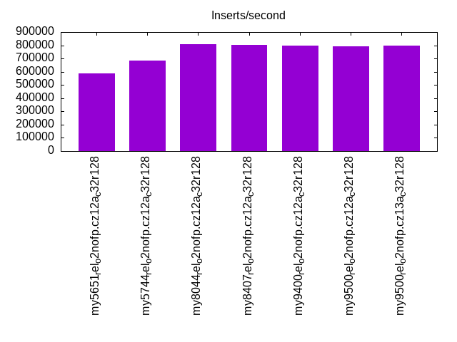
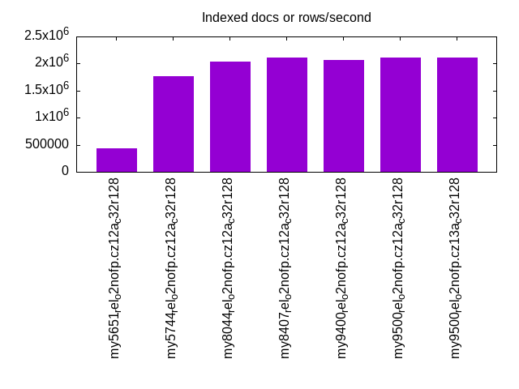
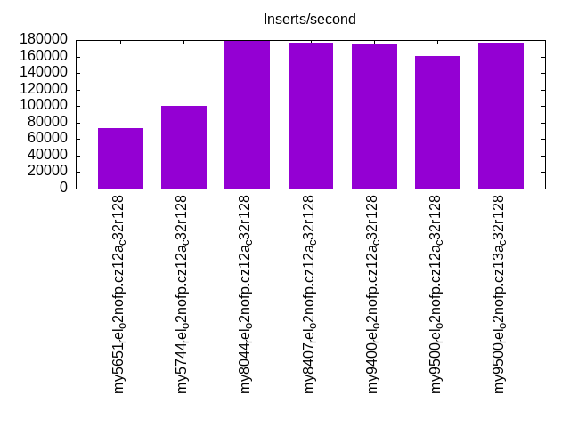
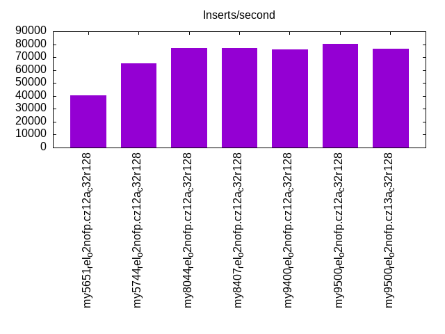
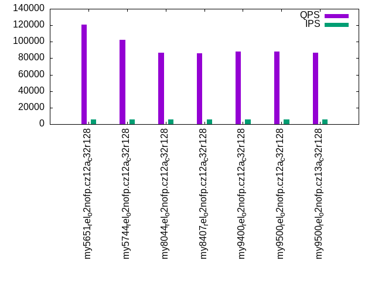
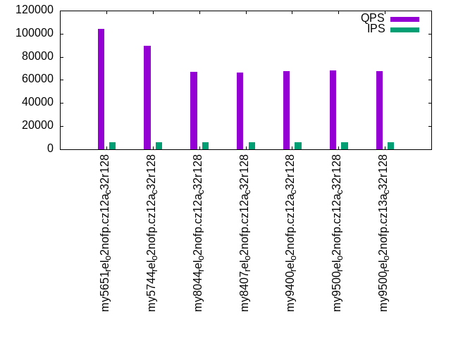
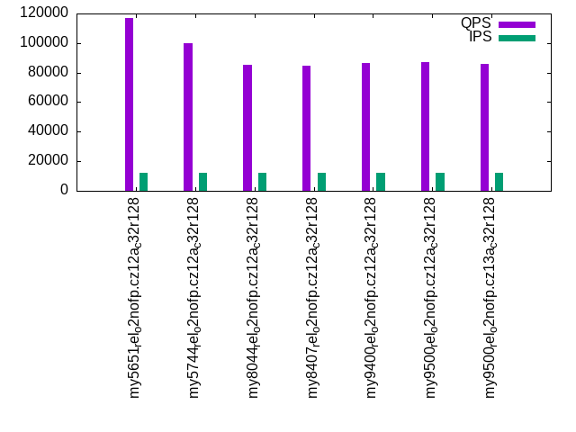
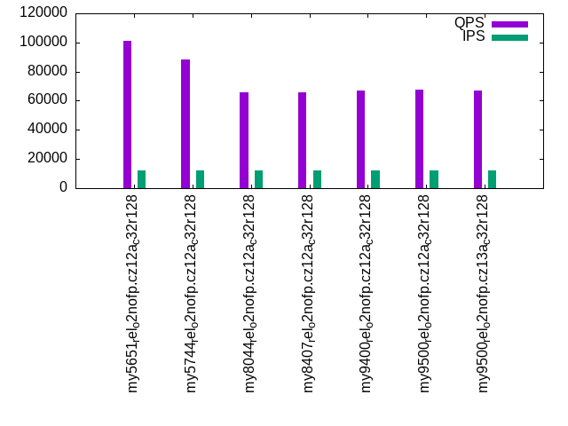

Introduction
This is a report for the insert benchmark with 120M docs and 12 client(s). It is generated by scripts (bash, awk, sed) and Tufte might not be impressed. An overview of the insert benchmark is here and a short update is here. Below, by DBMS, I mean DBMS+version.config. An example is my8020.c10b40 where my means MySQL, 8020 is version 8.0.20 and c10b40 is the name for the configuration file.
The test server has 32 cores, 128G RAM and 1 NVMe devices. The benchmark was run with 8 clients and there were 1 or 3 connections per client (1 for queries or inserts without rate limits, 1+1 for rate limited inserts+deletes). It uses 8 tables with a table per client. It loads 10M rows per table without secondary indexes, creates 3 secondary indexes per table, then inserts 16m+4m rows per table with a delete per insert to avoid growing the table. It then does 6 read+write tests for 1800s each that do queries as fast as possible with 100,100,500,500,1000,1000 inserts/s and the same for deletes/s per client concurrent with the queries. The database is cached. Clients and the DBMS share one server.
The tested DBMS are:
- my5651_rel_o2nofp.cz12a_c32r128 - MySQL 5.6.51 with the cz12a_c32r128 config
- my5744_rel_o2nofp.cz12a_c32r128 - MySQL 5.7.44 with the cz12a_c32r128 config
- my8044_rel_o2nofp.cz12a_c32r128 - MySQL 8.0.44 with the cz12a_c32r128 config
- my8407_rel_o2nofp.cz12a_c32r128 - MySQL 8.4.7 with the cz12a_c32r128 config
- my9400_rel_o2nofp.cz12a_c32r128 - MySQL 9.4.0 with the cz12a_c32r128 config
- my9500_rel_o2nofp.cz12a_c32r128 - MySQL 9.5.0 with the cz12a_c32r128 config
- my9500_rel_o2nofp.cz13a_c32r128 - MySQL 9.5.0 with the cz13a_c32r128 config
Contents
- Summary
- l.i0: load without secondary indexes
- l.x: create secondary indexes
- l.i1: continue load after secondary indexes created with 50 inserts per transaction
- l.i2: continue load after secondary indexes created with 5 inserts per transaction
- qr100.L1: range queries with 100 insert/s per client
- qp100.L2: point queries with 100 insert/s per client
- qr500.L3: range queries with 500 insert/s per client
- qp500.L4: point queries with 500 insert/s per client
- qr1000.L5: range queries with 1000 insert/s per client
- qp1000.L6: point queries with 1000 insert/s per client
Summary
The numbers are inserts/s for l.i0, l.i1 and l.i2, indexed docs (or rows) /s for l.x and queries/s for qr100, qp100 thru qr1000, qp1000" The values are the average rate over the entire test for inserts (IPS) and queries (QPS). The range of values for IPS and QPS is split into 3 parts: bottom 25%, middle 50%, top 25%. Values in the bottom 25% have a red background, values in the top 25% have a green background and values in the middle have no color. A gray background is used for values that can be ignored because the DBMS did not sustain the target insert rate. Red backgrounds are not used when the minimum value is within 80% of the max value.
| dbms | l.i0 | l.x | l.i1 | l.i2 | qr100 | qp100 | qr500 | qp500 | qr1000 | qp1000 |
|---|---|---|---|---|---|---|---|---|---|---|
| my5651_rel_o2nofp.cz12a_c32r128 | 588235 | 434783 | 73310 | 40336 | 124089 | 106971 | 121066 | 104368 | 116670 | 101387 |
| my5744_rel_o2nofp.cz12a_c32r128 | 681818 | 1764707 | 100734 | 65217 | 103047 | 90742 | 102065 | 89651 | 100142 | 88393 |
| my8044_rel_o2nofp.cz12a_c32r128 | 810811 | 2033900 | 178439 | 77295 | 87431 | 67597 | 86728 | 66919 | 85365 | 66041 |
| my8407_rel_o2nofp.cz12a_c32r128 | 805369 | 2105265 | 177122 | 77046 | 86349 | 66900 | 85754 | 66270 | 84533 | 65565 |
| my9400_rel_o2nofp.cz12a_c32r128 | 800000 | 2068967 | 176147 | 76190 | 88604 | 68507 | 87881 | 67858 | 86671 | 66970 |
| my9500_rel_o2nofp.cz12a_c32r128 | 794702 | 2105265 | 160535 | 80537 | 88822 | 68808 | 88253 | 68080 | 86993 | 67396 |
| my9500_rel_o2nofp.cz13a_c32r128 | 800000 | 2105265 | 176633 | 76433 | 87362 | 68255 | 86846 | 67708 | 85600 | 66827 |
This table has relative throughput, throughput for the DBMS relative to the DBMS in the first line, using the absolute throughput from the previous table. Values less than 0.95 have a yellow background. Values greater than 1.05 have a blue background.
| dbms | l.i0 | l.x | l.i1 | l.i2 | qr100 | qp100 | qr500 | qp500 | qr1000 | qp1000 |
|---|---|---|---|---|---|---|---|---|---|---|
| my5651_rel_o2nofp.cz12a_c32r128 | 1.00 | 1.00 | 1.00 | 1.00 | 1.00 | 1.00 | 1.00 | 1.00 | 1.00 | 1.00 |
| my5744_rel_o2nofp.cz12a_c32r128 | 1.16 | 4.06 | 1.37 | 1.62 | 0.83 | 0.85 | 0.84 | 0.86 | 0.86 | 0.87 |
| my8044_rel_o2nofp.cz12a_c32r128 | 1.38 | 4.68 | 2.43 | 1.92 | 0.70 | 0.63 | 0.72 | 0.64 | 0.73 | 0.65 |
| my8407_rel_o2nofp.cz12a_c32r128 | 1.37 | 4.84 | 2.42 | 1.91 | 0.70 | 0.63 | 0.71 | 0.63 | 0.72 | 0.65 |
| my9400_rel_o2nofp.cz12a_c32r128 | 1.36 | 4.76 | 2.40 | 1.89 | 0.71 | 0.64 | 0.73 | 0.65 | 0.74 | 0.66 |
| my9500_rel_o2nofp.cz12a_c32r128 | 1.35 | 4.84 | 2.19 | 2.00 | 0.72 | 0.64 | 0.73 | 0.65 | 0.75 | 0.66 |
| my9500_rel_o2nofp.cz13a_c32r128 | 1.36 | 4.84 | 2.41 | 1.89 | 0.70 | 0.64 | 0.72 | 0.65 | 0.73 | 0.66 |
This lists the average rate of inserts/s for the tests that do inserts concurrent with queries. For such tests the query rate is listed in the table above. The read+write tests are setup so that the insert rate should match the target rate every second. Cells that are not at least 95% of the target have a red background to indicate a failure to satisfy the target.
| dbms | qr100.L1 | qp100.L2 | qr500.L3 | qp500.L4 | qr1000.L5 | qp1000.L6 |
|---|---|---|---|---|---|---|
| my5651_rel_o2nofp.cz12a_c32r128 | 1193 | 1193 | 5960 | 5960 | 11927 | 11920 |
| my5744_rel_o2nofp.cz12a_c32r128 | 1192 | 1193 | 5964 | 5964 | 11927 | 11927 |
| my8044_rel_o2nofp.cz12a_c32r128 | 1193 | 1193 | 5960 | 5964 | 11927 | 11920 |
| my8407_rel_o2nofp.cz12a_c32r128 | 1193 | 1192 | 5960 | 5964 | 11927 | 11927 |
| my9400_rel_o2nofp.cz12a_c32r128 | 1192 | 1192 | 5964 | 5964 | 11920 | 11920 |
| my9500_rel_o2nofp.cz12a_c32r128 | 1193 | 1193 | 5964 | 5960 | 11920 | 11927 |
| my9500_rel_o2nofp.cz13a_c32r128 | 1192 | 1193 | 5964 | 5964 | 11920 | 11920 |
| target | 1200 | 1200 | 6000 | 6000 | 12000 | 12000 |
l.i0
l.i0: load without secondary indexes. Graphs for performance per 1-second interval are here.
Average throughput:
Insert response time histogram: each cell has the percentage of responses that take <= the time in the header and max is the max response time in seconds. For the max column values in the top 25% of the range have a red background and in the bottom 25% of the range have a green background. The red background is not used when the min value is within 80% of the max value.
| dbms | 256us | 1ms | 4ms | 16ms | 64ms | 256ms | 1s | 4s | 16s | gt | max |
|---|---|---|---|---|---|---|---|---|---|---|---|
| my5651_rel_o2nofp.cz12a_c32r128 | 5.149 | 94.604 | 0.063 | 0.164 | 0.020 | 0.183 | |||||
| my5744_rel_o2nofp.cz12a_c32r128 | 4.318 | 95.507 | 0.148 | 0.006 | 0.021 | 0.148 | |||||
| my8044_rel_o2nofp.cz12a_c32r128 | 0.330 | 99.576 | 0.070 | 0.003 | 0.021 | 0.162 | |||||
| my8407_rel_o2nofp.cz12a_c32r128 | 0.139 | 99.765 | 0.070 | 0.004 | 0.021 | 0.165 | |||||
| my9400_rel_o2nofp.cz12a_c32r128 | 0.432 | 99.473 | 0.070 | 0.004 | 0.021 | 0.162 | |||||
| my9500_rel_o2nofp.cz12a_c32r128 | 0.114 | 99.760 | 0.099 | 0.005 | 0.022 | 0.165 | |||||
| my9500_rel_o2nofp.cz13a_c32r128 | 0.180 | 99.715 | 0.075 | 0.007 | 0.022 | 0.168 |
Performance metrics for the DBMS listed above. Some are normalized by throughput, others are not. Legend for results is here.
ips qps rps rmbps wps wmbps rpq rkbpq wpi wkbpi csps cpups cspq cpupq dbgb1 dbgb2 rss maxop p50 p99 tag 588235 0 0 0.0 1479.3 144.1 0.000 0.000 0.003 0.251 70945 40.5 0.121 22 8.0 108.5 15.0 0.183 50994 42695 my5651_rel_o2nofp.cz12a_c32r128 681818 0 0 0.0 2172.5 181.4 0.000 0.000 0.003 0.272 83139 41.9 0.122 20 8.0 108.5 16.3 0.148 62392 53093 my5744_rel_o2nofp.cz12a_c32r128 810811 0 1 0.0 2689.5 229.2 0.000 0.000 0.003 0.289 139911 47.0 0.173 19 8.0 108.6 16.5 0.162 78990 69192 my8044_rel_o2nofp.cz12a_c32r128 805369 0 1 0.0 2672.4 224.1 0.000 0.000 0.003 0.285 136973 46.1 0.170 18 8.0 114.2 16.5 0.165 78091 67591 my8407_rel_o2nofp.cz12a_c32r128 800000 0 0 0.0 2660.2 223.8 0.000 0.000 0.003 0.286 136631 45.7 0.171 18 8.0 114.2 16.5 0.162 78289 67192 my9400_rel_o2nofp.cz12a_c32r128 794702 0 1 0.0 2673.0 225.8 0.000 0.000 0.003 0.291 145325 46.8 0.183 19 8.0 114.2 16.6 0.165 77391 67191 my9500_rel_o2nofp.cz12a_c32r128 800000 0 1 0.0 2672.2 224.2 0.000 0.000 0.003 0.287 136076 45.9 0.170 18 8.0 114.2 16.7 0.168 78491 66892 my9500_rel_o2nofp.cz13a_c32r128
Average values from iostat.
r/s rkB/s rrqm/s %rrqm r_await rareq-s w/s wkB/s wrqm/s %wrqm w_await wareq-s d/s dkB/s drqm/s %drqm d_await dareq-s f/s f_await aqu-sz %util 0.717 3.366 0.000 0.000 0.547 4.841 2689.5 234673 132.2 6.452 0.643 92.25 1.097 18.54 0.000 0.000 0.984 16.76 23.72 0.484 1.723 9.978 my8044_rel_o2nofp.cz12a_c32r128 0.680 3.120 0.000 0.000 0.575 4.560 2672.4 229528 131.7 6.475 0.674 90.24 1.233 36.35 0.000 0.000 1.028 24.49 23.40 0.485 1.839 9.752 my8407_rel_o2nofp.cz12a_c32r128 0.720 3.680 0.000 0.000 0.552 5.267 2673.0 231227 129.9 6.371 0.605 90.98 0.793 24.69 0.000 0.000 0.983 23.40 23.61 0.485 1.592 9.837 my9500_rel_o2nofp.cz12a_c32r128 0.720 3.360 0.000 0.000 0.759 4.433 2672.2 229541 130.9 6.536 0.670 90.39 1.493 9631.9 0.000 0.000 1.076 4897.2 23.30 0.483 1.853 9.829 my9500_rel_o2nofp.cz13a_c32r128
l.x
l.x: create secondary indexes.
Average throughput:
Performance metrics for the DBMS listed above. Some are normalized by throughput, others are not. Legend for results is here.
ips qps rps rmbps wps wmbps rpq rkbpq wpi wkbpi csps cpups cspq cpupq dbgb1 dbgb2 rss maxop p50 p99 tag 434783 0 0 0.0 10249.1 503.1 0.000 0.000 0.024 1.185 24790 31.2 0.057 23 16.7 117.2 23.9 0.001 NA NA my5651_rel_o2nofp.cz12a_c32r128 1764707 0 0 0.0 29014.1 1529.7 0.000 0.000 0.016 0.888 167293 34.0 0.095 6 18.2 118.8 24.3 0.018 NA NA my5744_rel_o2nofp.cz12a_c32r128 2033900 0 54 1.6 63224.8 2465.6 0.000 0.001 0.031 1.241 89008 74.1 0.044 12 18.2 118.8 16.8 0.007 NA NA my8044_rel_o2nofp.cz12a_c32r128 2105265 0 50 1.3 66028.0 2509.9 0.000 0.001 0.031 1.221 95406 73.8 0.045 11 18.2 124.4 16.9 0.004 NA NA my8407_rel_o2nofp.cz12a_c32r128 2068967 0 48 1.4 64874.8 2491.9 0.000 0.001 0.031 1.233 95514 72.4 0.046 11 18.2 124.4 16.8 0.004 NA NA my9400_rel_o2nofp.cz12a_c32r128 2105265 0 47 1.2 66840.0 2522.4 0.000 0.001 0.032 1.227 98125 72.6 0.047 11 18.2 124.4 17.1 0.011 NA NA my9500_rel_o2nofp.cz12a_c32r128 2105265 0 50 1.4 65118.9 2496.7 0.000 0.001 0.031 1.214 93632 71.5 0.044 11 18.2 124.4 17.1 0.005 NA NA my9500_rel_o2nofp.cz13a_c32r128
Average values from iostat.
r/s rkB/s rrqm/s %rrqm r_await rareq-s w/s wkB/s wrqm/s %wrqm w_await wareq-s d/s dkB/s drqm/s %drqm d_await dareq-s f/s f_await aqu-sz %util 53.72 1662.2 0.000 0.000 0.439 30.91 63224.8 2524744 701.0 1.555 0.483 45.03 119.3 350217 0.018 0.029 1.860 2551.0 46.42 0.710 25.45 84.43 my8044_rel_o2nofp.cz12a_c32r128 49.49 1297.2 0.000 0.000 0.356 26.18 66028.0 2570177 710.2 1.529 0.460 43.80 108.0 354673 0.000 0.000 1.854 2798.4 46.50 0.660 26.04 84.61 my8407_rel_o2nofp.cz12a_c32r128 46.84 1195.4 0.000 0.000 0.308 27.07 66840.0 2582925 735.7 1.550 0.480 43.29 114.9 354756 0.018 0.014 1.850 2708.9 46.73 0.836 27.79 84.73 my9500_rel_o2nofp.cz12a_c32r128 50.41 1467.8 0.000 0.000 0.329 28.48 65118.9 2556648 722.7 1.502 0.456 43.36 125.4 354224 0.000 0.000 1.740 2561.9 46.64 0.763 25.94 85.03 my9500_rel_o2nofp.cz13a_c32r128
l.i1
l.i1: continue load after secondary indexes created with 50 inserts per transaction. Graphs for performance per 1-second interval are here.
Average throughput:
Insert response time histogram: each cell has the percentage of responses that take <= the time in the header and max is the max response time in seconds. For the max column values in the top 25% of the range have a red background and in the bottom 25% of the range have a green background. The red background is not used when the min value is within 80% of the max value.
| dbms | 256us | 1ms | 4ms | 16ms | 64ms | 256ms | 1s | 4s | 16s | gt | max |
|---|---|---|---|---|---|---|---|---|---|---|---|
| my5651_rel_o2nofp.cz12a_c32r128 | nonzero | 0.547 | 97.278 | 1.780 | 0.339 | 0.053 | 0.002 | nonzero | 7.892 | ||
| my5744_rel_o2nofp.cz12a_c32r128 | 0.012 | 12.447 | 86.949 | 0.206 | 0.132 | 0.247 | 0.007 | nonzero | 5.749 | ||
| my8044_rel_o2nofp.cz12a_c32r128 | 87.969 | 11.741 | 0.209 | 0.069 | 0.010 | 0.001 | 2.050 | ||||
| my8407_rel_o2nofp.cz12a_c32r128 | 88.031 | 11.647 | 0.227 | 0.082 | 0.012 | 0.001 | 2.097 | ||||
| my9400_rel_o2nofp.cz12a_c32r128 | 88.017 | 11.669 | 0.220 | 0.081 | 0.013 | nonzero | 1.410 | ||||
| my9500_rel_o2nofp.cz12a_c32r128 | 83.209 | 16.449 | 0.241 | 0.084 | 0.016 | 0.001 | 1.373 | ||||
| my9500_rel_o2nofp.cz13a_c32r128 | 88.145 | 11.529 | 0.228 | 0.082 | 0.015 | 0.001 | 1.653 |
Delete response time histogram: each cell has the percentage of responses that take <= the time in the header and max is the max response time in seconds. For the max column values in the top 25% of the range have a red background and in the bottom 25% of the range have a green background. The red background is not used when the min value is within 80% of the max value.
| dbms | 256us | 1ms | 4ms | 16ms | 64ms | 256ms | 1s | 4s | 16s | gt | max |
|---|---|---|---|---|---|---|---|---|---|---|---|
| my5651_rel_o2nofp.cz12a_c32r128 | 0.002 | 1.249 | 96.748 | 1.640 | 0.311 | 0.049 | 0.002 | nonzero | 4.268 | ||
| my5744_rel_o2nofp.cz12a_c32r128 | 0.082 | 17.660 | 81.710 | 0.182 | 0.144 | 0.218 | 0.004 | nonzero | 5.766 | ||
| my8044_rel_o2nofp.cz12a_c32r128 | 0.005 | 88.257 | 11.455 | 0.196 | 0.075 | 0.009 | 0.001 | 2.050 | |||
| my8407_rel_o2nofp.cz12a_c32r128 | 0.007 | 88.343 | 11.335 | 0.214 | 0.088 | 0.013 | 0.001 | 2.038 | |||
| my9400_rel_o2nofp.cz12a_c32r128 | 0.011 | 88.371 | 11.326 | 0.199 | 0.080 | 0.013 | nonzero | 1.305 | |||
| my9500_rel_o2nofp.cz12a_c32r128 | 0.019 | 83.677 | 16.076 | 0.152 | 0.064 | 0.013 | 0.001 | 1.322 | |||
| my9500_rel_o2nofp.cz13a_c32r128 | 0.015 | 88.461 | 11.198 | 0.222 | 0.087 | 0.016 | 0.001 | 1.471 |
Performance metrics for the DBMS listed above. Some are normalized by throughput, others are not. Legend for results is here.
ips qps rps rmbps wps wmbps rpq rkbpq wpi wkbpi csps cpups cspq cpupq dbgb1 dbgb2 rss maxop p50 p99 tag 73310 0 1232 4.8 3521.7 150.4 0.017 0.067 0.048 2.101 110840 73.5 1.512 321 30.2 132.2 37.8 7.892 6549 200 my5651_rel_o2nofp.cz12a_c32r128 100734 0 0 0.0 4495.2 186.7 0.000 0.000 0.045 1.898 47808 76.4 0.475 243 30.7 132.7 39.3 5.749 9995 0 my5744_rel_o2nofp.cz12a_c32r128 178439 0 538 8.4 7422.6 325.0 0.003 0.048 0.042 1.865 208681 68.5 1.169 123 31.0 134.4 43.1 2.050 18248 2800 my8044_rel_o2nofp.cz12a_c32r128 177122 0 536 8.4 7462.9 327.1 0.003 0.048 0.042 1.891 208813 67.5 1.179 122 31.0 158.6 44.1 2.097 18148 2650 my8407_rel_o2nofp.cz12a_c32r128 176147 0 531 8.3 7378.9 322.2 0.003 0.048 0.042 1.873 207188 67.4 1.176 122 31.0 158.9 43.1 1.410 17893 3100 my9400_rel_o2nofp.cz12a_c32r128 160535 0 484 7.6 7264.3 316.9 0.003 0.048 0.045 2.022 226896 63.3 1.413 126 29.3 155.6 38.2 1.373 15288 2200 my9500_rel_o2nofp.cz12a_c32r128 176633 0 534 8.3 7427.1 324.9 0.003 0.048 0.042 1.883 206553 67.1 1.169 122 31.0 158.0 44.4 1.653 17948 2000 my9500_rel_o2nofp.cz13a_c32r128
Average values from iostat.
r/s rkB/s rrqm/s %rrqm r_await rareq-s w/s wkB/s wrqm/s %wrqm w_await wareq-s d/s dkB/s drqm/s %drqm d_await dareq-s f/s f_await aqu-sz %util 538.5 8613.7 0.000 0.000 0.701 9.924 7422.6 332750 81.41 1.056 4.940 45.55 0.581 4876.4 0.000 0.000 1.657 337.2 20.40 1.849 30.89 22.63 my8044_rel_o2nofp.cz12a_c32r128 536.0 8573.8 0.000 0.000 1.361 10.18 7462.9 334977 89.88 1.162 4.974 45.59 0.649 6741.9 0.000 0.000 1.360 442.6 20.37 1.765 33.54 23.70 my8407_rel_o2nofp.cz12a_c32r128 484.4 7748.4 0.000 0.000 1.598 9.930 7264.3 324533 69.24 0.922 5.345 45.35 0.370 24.66 0.000 0.000 1.517 20.42 18.70 2.000 36.34 22.90 my9500_rel_o2nofp.cz12a_c32r128 533.6 8534.4 0.000 0.000 2.549 10.29 7427.1 332667 76.02 0.998 5.161 45.48 0.669 6742.2 0.000 0.000 1.336 555.2 19.72 1.887 35.22 24.22 my9500_rel_o2nofp.cz13a_c32r128
l.i2
l.i2: continue load after secondary indexes created with 5 inserts per transaction. Graphs for performance per 1-second interval are here.
Average throughput:
Insert response time histogram: each cell has the percentage of responses that take <= the time in the header and max is the max response time in seconds. For the max column values in the top 25% of the range have a red background and in the bottom 25% of the range have a green background. The red background is not used when the min value is within 80% of the max value.
| dbms | 256us | 1ms | 4ms | 16ms | 64ms | 256ms | 1s | 4s | 16s | gt | max |
|---|---|---|---|---|---|---|---|---|---|---|---|
| my5651_rel_o2nofp.cz12a_c32r128 | 0.059 | 30.596 | 68.493 | 0.287 | 0.556 | 0.008 | 0.239 | ||||
| my5744_rel_o2nofp.cz12a_c32r128 | 0.135 | 86.626 | 12.783 | 0.033 | 0.417 | 0.006 | 0.001 | nonzero | 1.226 | ||
| my8044_rel_o2nofp.cz12a_c32r128 | 0.049 | 90.888 | 8.322 | 0.721 | 0.012 | 0.008 | 0.001 | 0.472 | |||
| my8407_rel_o2nofp.cz12a_c32r128 | 0.011 | 90.832 | 8.466 | 0.671 | 0.011 | 0.007 | 0.001 | 0.530 | |||
| my9400_rel_o2nofp.cz12a_c32r128 | 0.062 | 90.685 | 8.483 | 0.747 | 0.012 | 0.008 | 0.001 | 0.863 | |||
| my9500_rel_o2nofp.cz12a_c32r128 | 0.022 | 92.944 | 6.483 | 0.527 | 0.014 | 0.009 | 0.002 | 0.925 | |||
| my9500_rel_o2nofp.cz13a_c32r128 | 0.043 | 90.768 | 8.455 | 0.711 | 0.013 | 0.008 | 0.002 | 0.917 |
Delete response time histogram: each cell has the percentage of responses that take <= the time in the header and max is the max response time in seconds. For the max column values in the top 25% of the range have a red background and in the bottom 25% of the range have a green background. The red background is not used when the min value is within 80% of the max value.
| dbms | 256us | 1ms | 4ms | 16ms | 64ms | 256ms | 1s | 4s | 16s | gt | max |
|---|---|---|---|---|---|---|---|---|---|---|---|
| my5651_rel_o2nofp.cz12a_c32r128 | 0.066 | 31.657 | 67.428 | 0.286 | 0.556 | 0.008 | 0.239 | ||||
| my5744_rel_o2nofp.cz12a_c32r128 | 0.122 | 83.900 | 15.521 | 0.034 | 0.417 | 0.006 | 0.001 | nonzero | 1.226 | ||
| my8044_rel_o2nofp.cz12a_c32r128 | 0.063 | 91.539 | 7.694 | 0.684 | 0.011 | 0.008 | 0.001 | 0.485 | |||
| my8407_rel_o2nofp.cz12a_c32r128 | 0.016 | 91.464 | 7.870 | 0.632 | 0.010 | 0.007 | 0.002 | 0.541 | |||
| my9400_rel_o2nofp.cz12a_c32r128 | 0.090 | 91.283 | 7.899 | 0.709 | 0.010 | 0.008 | 0.001 | 0.876 | |||
| my9500_rel_o2nofp.cz12a_c32r128 | 0.051 | 93.246 | 6.189 | 0.492 | 0.012 | 0.009 | 0.002 | 0.927 | |||
| my9500_rel_o2nofp.cz13a_c32r128 | 0.046 | 91.412 | 7.849 | 0.673 | 0.011 | 0.008 | 0.002 | 0.919 |
Performance metrics for the DBMS listed above. Some are normalized by throughput, others are not. Legend for results is here.
ips qps rps rmbps wps wmbps rpq rkbpq wpi wkbpi csps cpups cspq cpupq dbgb1 dbgb2 rss maxop p50 p99 tag 40336 0 5558 21.7 3232.3 131.6 0.138 0.551 0.080 3.340 276703 67.6 6.860 536 30.2 132.2 38.0 0.239 3685 165 my5651_rel_o2nofp.cz12a_c32r128 65217 0 0 0.0 5030.0 209.1 0.000 0.000 0.077 3.284 282521 67.5 4.332 331 30.7 132.7 39.8 1.226 6284 180 my5744_rel_o2nofp.cz12a_c32r128 77295 0 0 0.0 5889.1 251.6 0.000 0.000 0.076 3.333 415098 66.8 5.370 277 31.0 132.0 43.1 0.472 7519 1130 my8044_rel_o2nofp.cz12a_c32r128 77046 0 0 0.0 5934.3 252.5 0.000 0.000 0.077 3.356 416881 66.8 5.411 277 31.0 166.3 44.1 0.530 7499 1120 my8407_rel_o2nofp.cz12a_c32r128 76190 0 0 0.0 5845.0 249.0 0.000 0.000 0.077 3.347 410083 65.4 5.382 275 31.0 165.6 43.2 0.863 7493 1095 my9400_rel_o2nofp.cz12a_c32r128 80537 0 0 0.0 6022.8 261.5 0.000 0.000 0.075 3.325 443544 67.8 5.507 269 29.3 164.8 38.5 0.925 7539 1090 my9500_rel_o2nofp.cz12a_c32r128 76433 0 0 0.0 5883.2 250.6 0.000 0.000 0.077 3.357 416022 66.4 5.443 278 31.0 165.8 44.4 0.917 7444 1120 my9500_rel_o2nofp.cz13a_c32r128
Average values from iostat.
r/s rkB/s rrqm/s %rrqm r_await rareq-s w/s wkB/s wrqm/s %wrqm w_await wareq-s d/s dkB/s drqm/s %drqm d_await dareq-s f/s f_await aqu-sz %util 0.061 0.245 0.000 0.000 0.294 0.968 5889.1 257614 4.824 0.082 4.380 43.79 0.568 5136.7 0.000 0.000 0.753 436.0 13.18 1.758 25.79 14.66 my8044_rel_o2nofp.cz12a_c32r128 0.084 0.335 0.000 0.000 0.880 1.226 5934.3 258554 4.721 0.078 4.921 43.58 0.381 3344.7 0.000 0.000 1.141 316.6 12.87 1.972 29.07 15.80 my8407_rel_o2nofp.cz12a_c32r128 0.116 0.464 0.000 0.000 1.789 1.244 6022.8 267786 4.034 0.066 5.870 44.48 0.318 23.66 0.000 0.000 1.151 22.78 13.01 2.248 35.13 17.55 my9500_rel_o2nofp.cz12a_c32r128 0.074 0.294 0.000 0.000 0.627 1.024 5883.2 256608 4.482 0.076 5.137 43.68 0.306 3321.7 0.000 0.000 0.882 397.4 13.08 2.028 30.00 16.52 my9500_rel_o2nofp.cz13a_c32r128
qr100.L1
qr100.L1: range queries with 100 insert/s per client. Graphs for performance per 1-second interval are here.
Average throughput:
Query response time histogram: each cell has the percentage of responses that take <= the time in the header and max is the max response time in seconds. For max values in the top 25% of the range have a red background and in the bottom 25% of the range have a green background. The red background is not used when the min value is within 80% of the max value.
| dbms | 256us | 1ms | 4ms | 16ms | 64ms | 256ms | 1s | 4s | 16s | gt | max |
|---|---|---|---|---|---|---|---|---|---|---|---|
| my5651_rel_o2nofp.cz12a_c32r128 | 99.980 | 0.009 | 0.011 | nonzero | 0.007 | ||||||
| my5744_rel_o2nofp.cz12a_c32r128 | 99.995 | 0.005 | nonzero | nonzero | nonzero | 0.024 | |||||
| my8044_rel_o2nofp.cz12a_c32r128 | 99.988 | 0.012 | nonzero | 0.002 | |||||||
| my8407_rel_o2nofp.cz12a_c32r128 | 99.988 | 0.012 | nonzero | nonzero | nonzero | nonzero | 0.111 | ||||
| my9400_rel_o2nofp.cz12a_c32r128 | 99.989 | 0.011 | nonzero | nonzero | nonzero | nonzero | 0.215 | ||||
| my9500_rel_o2nofp.cz12a_c32r128 | 99.987 | 0.013 | nonzero | nonzero | 0.005 | ||||||
| my9500_rel_o2nofp.cz13a_c32r128 | 99.988 | 0.012 | nonzero | 0.003 |
Insert response time histogram: each cell has the percentage of responses that take <= the time in the header and max is the max response time in seconds. For max values in the top 25% of the range have a red background and in the bottom 25% of the range have a green background. The red background is not used when the min value is within 80% of the max value.
| dbms | 256us | 1ms | 4ms | 16ms | 64ms | 256ms | 1s | 4s | 16s | gt | max |
|---|---|---|---|---|---|---|---|---|---|---|---|
| my5651_rel_o2nofp.cz12a_c32r128 | 96.007 | 3.993 | 0.012 | ||||||||
| my5744_rel_o2nofp.cz12a_c32r128 | 99.609 | 0.387 | 0.005 | 0.020 | |||||||
| my8044_rel_o2nofp.cz12a_c32r128 | 99.231 | 0.766 | 0.002 | 0.020 | |||||||
| my8407_rel_o2nofp.cz12a_c32r128 | 99.181 | 0.743 | 0.037 | 0.039 | 0.152 | ||||||
| my9400_rel_o2nofp.cz12a_c32r128 | 99.190 | 0.229 | 0.338 | 0.231 | 0.012 | 0.349 | |||||
| my9500_rel_o2nofp.cz12a_c32r128 | 99.435 | 0.562 | 0.002 | 0.017 | |||||||
| my9500_rel_o2nofp.cz13a_c32r128 | 99.081 | 0.917 | 0.002 | 0.017 |
Delete response time histogram: each cell has the percentage of responses that take <= the time in the header and max is the max response time in seconds. For max values in the top 25% of the range have a red background and in the bottom 25% of the range have a green background. The red background is not used when the min value is within 80% of the max value.
| dbms | 256us | 1ms | 4ms | 16ms | 64ms | 256ms | 1s | 4s | 16s | gt | max |
|---|---|---|---|---|---|---|---|---|---|---|---|
| my5651_rel_o2nofp.cz12a_c32r128 | 4.477 | 92.755 | 2.769 | 0.013 | |||||||
| my5744_rel_o2nofp.cz12a_c32r128 | 3.405 | 96.287 | 0.306 | 0.002 | 0.038 | ||||||
| my8044_rel_o2nofp.cz12a_c32r128 | 0.005 | 99.252 | 0.741 | 0.002 | 0.018 | ||||||
| my8407_rel_o2nofp.cz12a_c32r128 | 0.005 | 99.255 | 0.678 | 0.032 | 0.030 | 0.168 | |||||
| my9400_rel_o2nofp.cz12a_c32r128 | 0.002 | 99.257 | 0.218 | 0.278 | 0.241 | 0.005 | 0.344 | ||||
| my9500_rel_o2nofp.cz12a_c32r128 | 99.521 | 0.477 | 0.002 | 0.019 | |||||||
| my9500_rel_o2nofp.cz13a_c32r128 | 0.005 | 99.100 | 0.894 | 0.002 | 0.019 |
Performance metrics for the DBMS listed above. Some are normalized by throughput, others are not. Legend for results is here.
ips qps rps rmbps wps wmbps rpq rkbpq wpi wkbpi csps cpups cspq cpupq dbgb1 dbgb2 rss maxop p50 p99 tag 1193 124089 37 0.1 3826.9 107.0 0.000 0.001 3.209 91.880 712210 39.1 5.739 101 30.2 132.2 38.0 0.007 10399 10143 my5651_rel_o2nofp.cz12a_c32r128 1192 103047 0 0.0 1437.2 40.6 0.000 0.000 1.206 34.898 591672 39.3 5.742 122 30.7 132.7 39.8 0.024 8671 8559 my5744_rel_o2nofp.cz12a_c32r128 1193 87431 0 0.0 1446.6 41.0 0.000 0.000 1.213 35.236 505409 38.9 5.781 142 31.0 132.0 43.1 0.002 7327 7231 my8044_rel_o2nofp.cz12a_c32r128 1193 86349 0 0.0 1394.3 39.6 0.000 0.000 1.169 33.986 499119 38.8 5.780 144 31.0 166.5 44.1 0.111 7199 7119 my8407_rel_o2nofp.cz12a_c32r128 1192 88604 0 0.0 1415.8 40.2 0.000 0.000 1.188 34.504 512226 38.9 5.781 140 31.0 165.9 43.2 0.215 7439 7327 my9400_rel_o2nofp.cz12a_c32r128 1193 88822 0 0.0 1428.9 40.5 0.000 0.000 1.198 34.813 513198 38.9 5.778 140 29.3 165.0 38.6 0.005 7407 7311 my9500_rel_o2nofp.cz12a_c32r128 1192 87362 0 0.0 1493.5 42.3 0.000 0.000 1.253 36.368 505179 39.0 5.783 143 31.0 166.0 44.4 0.003 7359 7279 my9500_rel_o2nofp.cz13a_c32r128
Average values from iostat.
r/s rkB/s rrqm/s %rrqm r_await rareq-s w/s wkB/s wrqm/s %wrqm w_await wareq-s d/s dkB/s drqm/s %drqm d_await dareq-s f/s f_await aqu-sz %util 0.000 0.000 0.000 0.000 0.000 0.000 1446.6 42026.4 1.122 0.271 0.700 30.55 0.013 0.060 0.000 0.000 0.069 0.265 2.566 0.850 2.057 2.122 my8044_rel_o2nofp.cz12a_c32r128 0.000 0.000 0.000 0.000 0.000 0.000 1394.3 40534.5 1.341 0.377 0.598 30.91 0.011 0.137 0.000 0.000 0.065 0.409 2.318 0.566 1.216 6.236 my8407_rel_o2nofp.cz12a_c32r128 0.001 0.004 0.000 0.000 0.017 0.022 1428.9 41521.6 1.154 0.263 1.175 30.46 0.014 0.716 0.000 0.000 0.133 3.462 2.516 0.933 2.485 2.469 my9500_rel_o2nofp.cz12a_c32r128 0.002 0.007 0.000 0.000 0.000 0.022 1493.5 43350.9 1.143 0.305 1.128 30.79 0.012 0.049 0.000 0.000 0.072 0.221 2.362 0.888 3.211 3.223 my9500_rel_o2nofp.cz13a_c32r128
qp100.L2
qp100.L2: point queries with 100 insert/s per client. Graphs for performance per 1-second interval are here.
Average throughput:

Query response time histogram: each cell has the percentage of responses that take <= the time in the header and max is the max response time in seconds. For max values in the top 25% of the range have a red background and in the bottom 25% of the range have a green background. The red background is not used when the min value is within 80% of the max value.
| dbms | 256us | 1ms | 4ms | 16ms | 64ms | 256ms | 1s | 4s | 16s | gt | max |
|---|---|---|---|---|---|---|---|---|---|---|---|
| my5651_rel_o2nofp.cz12a_c32r128 | 99.957 | 0.029 | 0.014 | 0.004 | |||||||
| my5744_rel_o2nofp.cz12a_c32r128 | 99.985 | 0.015 | nonzero | 0.002 | |||||||
| my8044_rel_o2nofp.cz12a_c32r128 | 99.958 | 0.042 | nonzero | 0.002 | |||||||
| my8407_rel_o2nofp.cz12a_c32r128 | 99.958 | 0.042 | nonzero | nonzero | 0.004 | ||||||
| my9400_rel_o2nofp.cz12a_c32r128 | 99.956 | 0.044 | nonzero | 0.004 | |||||||
| my9500_rel_o2nofp.cz12a_c32r128 | 99.961 | 0.039 | nonzero | 0.003 | |||||||
| my9500_rel_o2nofp.cz13a_c32r128 | 99.960 | 0.039 | nonzero | 0.003 |
Insert response time histogram: each cell has the percentage of responses that take <= the time in the header and max is the max response time in seconds. For max values in the top 25% of the range have a red background and in the bottom 25% of the range have a green background. The red background is not used when the min value is within 80% of the max value.
| dbms | 256us | 1ms | 4ms | 16ms | 64ms | 256ms | 1s | 4s | 16s | gt | max |
|---|---|---|---|---|---|---|---|---|---|---|---|
| my5651_rel_o2nofp.cz12a_c32r128 | 94.215 | 5.785 | 0.007 | ||||||||
| my5744_rel_o2nofp.cz12a_c32r128 | 99.998 | 0.002 | 0.004 | ||||||||
| my8044_rel_o2nofp.cz12a_c32r128 | 98.965 | 1.035 | 0.005 | ||||||||
| my8407_rel_o2nofp.cz12a_c32r128 | 99.123 | 0.877 | 0.016 | ||||||||
| my9400_rel_o2nofp.cz12a_c32r128 | 98.676 | 1.324 | 0.015 | ||||||||
| my9500_rel_o2nofp.cz12a_c32r128 | 98.998 | 0.993 | 0.009 | 0.022 | |||||||
| my9500_rel_o2nofp.cz13a_c32r128 | 99.301 | 0.694 | 0.005 | 0.019 |
Delete response time histogram: each cell has the percentage of responses that take <= the time in the header and max is the max response time in seconds. For max values in the top 25% of the range have a red background and in the bottom 25% of the range have a green background. The red background is not used when the min value is within 80% of the max value.
| dbms | 256us | 1ms | 4ms | 16ms | 64ms | 256ms | 1s | 4s | 16s | gt | max |
|---|---|---|---|---|---|---|---|---|---|---|---|
| my5651_rel_o2nofp.cz12a_c32r128 | 1.282 | 95.282 | 3.435 | 0.006 | |||||||
| my5744_rel_o2nofp.cz12a_c32r128 | 1.259 | 98.738 | 0.002 | 0.004 | |||||||
| my8044_rel_o2nofp.cz12a_c32r128 | 98.977 | 1.023 | 0.005 | ||||||||
| my8407_rel_o2nofp.cz12a_c32r128 | 99.132 | 0.868 | 0.013 | ||||||||
| my9400_rel_o2nofp.cz12a_c32r128 | 98.715 | 1.282 | 0.002 | 0.017 | |||||||
| my9500_rel_o2nofp.cz12a_c32r128 | 99.030 | 0.961 | 0.009 | 0.018 | |||||||
| my9500_rel_o2nofp.cz13a_c32r128 | 99.347 | 0.648 | 0.005 | 0.020 |
Performance metrics for the DBMS listed above. Some are normalized by throughput, others are not. Legend for results is here.
ips qps rps rmbps wps wmbps rpq rkbpq wpi wkbpi csps cpups cspq cpupq dbgb1 dbgb2 rss maxop p50 p99 tag 1193 106971 38 0.1 16.9 1.4 0.000 0.001 0.014 1.205 619294 38.0 5.789 114 30.2 132.2 38.0 0.004 8927 8783 my5651_rel_o2nofp.cz12a_c32r128 1193 90742 0 0.0 120.2 4.1 0.000 0.000 0.101 3.504 525488 38.9 5.791 137 30.7 132.7 39.8 0.002 7615 7535 my5744_rel_o2nofp.cz12a_c32r128 1193 67597 0 0.0 119.2 4.1 0.000 0.000 0.100 3.541 392995 38.1 5.814 180 31.0 132.0 43.1 0.002 5647 5583 my8044_rel_o2nofp.cz12a_c32r128 1192 66900 0 0.0 127.5 4.4 0.000 0.000 0.107 3.773 389156 38.0 5.817 182 31.0 166.7 44.1 0.004 5599 5551 my8407_rel_o2nofp.cz12a_c32r128 1192 68507 0 0.0 136.2 4.7 0.000 0.000 0.114 4.004 398400 38.2 5.815 178 31.0 166.1 43.2 0.004 5743 5695 my9400_rel_o2nofp.cz12a_c32r128 1193 68808 0 0.0 105.4 3.8 0.000 0.000 0.088 3.279 399983 38.1 5.813 177 29.3 165.2 38.6 0.003 5775 5711 my9500_rel_o2nofp.cz12a_c32r128 1193 68255 0 0.0 114.9 4.0 0.000 0.000 0.096 3.426 396756 38.5 5.813 180 31.0 166.3 44.4 0.003 5711 5647 my9500_rel_o2nofp.cz13a_c32r128
Average values from iostat.
r/s rkB/s rrqm/s %rrqm r_await rareq-s w/s wkB/s wrqm/s %wrqm w_await wareq-s d/s dkB/s drqm/s %drqm d_await dareq-s f/s f_await aqu-sz %util 0.000 0.000 0.000 0.000 0.000 0.000 119.2 4223.6 1.080 0.929 0.402 35.73 0.006 0.024 0.000 0.000 0.030 0.122 2.466 0.536 0.048 4.767 my8044_rel_o2nofp.cz12a_c32r128 0.001 0.002 0.000 0.000 0.008 0.011 127.5 4497.3 1.378 1.081 0.461 35.30 0.010 0.042 0.000 0.000 0.047 0.188 2.036 0.770 0.062 2.138 my8407_rel_o2nofp.cz12a_c32r128 0.002 0.009 0.000 0.000 0.008 0.033 105.4 3910.5 1.181 1.167 0.429 37.61 0.023 1.242 0.000 0.000 0.107 6.092 2.493 0.543 0.047 4.336 my9500_rel_o2nofp.cz12a_c32r128 0.001 0.002 0.000 0.000 0.008 0.011 114.9 4085.8 1.119 0.970 0.448 35.55 0.020 0.082 0.000 0.000 0.099 0.387 2.328 0.506 0.053 10.10 my9500_rel_o2nofp.cz13a_c32r128
qr500.L3
qr500.L3: range queries with 500 insert/s per client. Graphs for performance per 1-second interval are here.
Average throughput:
Query response time histogram: each cell has the percentage of responses that take <= the time in the header and max is the max response time in seconds. For max values in the top 25% of the range have a red background and in the bottom 25% of the range have a green background. The red background is not used when the min value is within 80% of the max value.
| dbms | 256us | 1ms | 4ms | 16ms | 64ms | 256ms | 1s | 4s | 16s | gt | max |
|---|---|---|---|---|---|---|---|---|---|---|---|
| my5651_rel_o2nofp.cz12a_c32r128 | 99.892 | 0.092 | 0.015 | 0.001 | 0.007 | ||||||
| my5744_rel_o2nofp.cz12a_c32r128 | 99.988 | 0.011 | nonzero | nonzero | 0.004 | ||||||
| my8044_rel_o2nofp.cz12a_c32r128 | 99.978 | 0.021 | nonzero | 0.003 | |||||||
| my8407_rel_o2nofp.cz12a_c32r128 | 99.974 | 0.026 | nonzero | 0.004 | |||||||
| my9400_rel_o2nofp.cz12a_c32r128 | 99.977 | 0.023 | nonzero | 0.003 | |||||||
| my9500_rel_o2nofp.cz12a_c32r128 | 99.979 | 0.020 | nonzero | nonzero | 0.085 | ||||||
| my9500_rel_o2nofp.cz13a_c32r128 | 99.977 | 0.023 | nonzero | nonzero | nonzero | nonzero | 0.101 |
Insert response time histogram: each cell has the percentage of responses that take <= the time in the header and max is the max response time in seconds. For max values in the top 25% of the range have a red background and in the bottom 25% of the range have a green background. The red background is not used when the min value is within 80% of the max value.
| dbms | 256us | 1ms | 4ms | 16ms | 64ms | 256ms | 1s | 4s | 16s | gt | max |
|---|---|---|---|---|---|---|---|---|---|---|---|
| my5651_rel_o2nofp.cz12a_c32r128 | 0.003 | 73.542 | 26.444 | 0.011 | 0.023 | ||||||
| my5744_rel_o2nofp.cz12a_c32r128 | nonzero | 99.661 | 0.334 | 0.005 | 0.024 | ||||||
| my8044_rel_o2nofp.cz12a_c32r128 | 99.903 | 0.088 | 0.008 | nonzero | 0.066 | ||||||
| my8407_rel_o2nofp.cz12a_c32r128 | 99.623 | 0.372 | 0.005 | 0.021 | |||||||
| my9400_rel_o2nofp.cz12a_c32r128 | 99.656 | 0.340 | 0.003 | 0.022 | |||||||
| my9500_rel_o2nofp.cz12a_c32r128 | 99.654 | 0.333 | 0.013 | 0.029 | |||||||
| my9500_rel_o2nofp.cz13a_c32r128 | 99.938 | 0.033 | 0.022 | 0.007 | 0.137 |
Delete response time histogram: each cell has the percentage of responses that take <= the time in the header and max is the max response time in seconds. For max values in the top 25% of the range have a red background and in the bottom 25% of the range have a green background. The red background is not used when the min value is within 80% of the max value.
| dbms | 256us | 1ms | 4ms | 16ms | 64ms | 256ms | 1s | 4s | 16s | gt | max |
|---|---|---|---|---|---|---|---|---|---|---|---|
| my5651_rel_o2nofp.cz12a_c32r128 | 0.046 | 81.539 | 18.409 | 0.006 | 0.024 | ||||||
| my5744_rel_o2nofp.cz12a_c32r128 | 0.303 | 99.548 | 0.144 | 0.005 | 0.024 | ||||||
| my8044_rel_o2nofp.cz12a_c32r128 | 99.929 | 0.063 | 0.007 | nonzero | 0.064 | ||||||
| my8407_rel_o2nofp.cz12a_c32r128 | 99.732 | 0.265 | 0.003 | 0.019 | |||||||
| my9400_rel_o2nofp.cz12a_c32r128 | 0.007 | 99.773 | 0.216 | 0.004 | 0.024 | ||||||
| my9500_rel_o2nofp.cz12a_c32r128 | nonzero | 99.771 | 0.217 | 0.012 | 0.031 | ||||||
| my9500_rel_o2nofp.cz13a_c32r128 | 0.001 | 99.958 | 0.022 | 0.014 | 0.005 | 0.123 |
Performance metrics for the DBMS listed above. Some are normalized by throughput, others are not. Legend for results is here.
ips qps rps rmbps wps wmbps rpq rkbpq wpi wkbpi csps cpups cspq cpupq dbgb1 dbgb2 rss maxop p50 p99 tag 5960 121066 176 0.7 954.2 31.4 0.001 0.006 0.160 5.390 692345 41.8 5.719 110 30.2 132.2 38.1 0.007 10110 9903 my5651_rel_o2nofp.cz12a_c32r128 5964 102065 0 0.0 555.6 20.3 0.000 0.000 0.093 3.483 585184 41.4 5.733 130 30.7 132.7 39.9 0.004 8607 8479 my5744_rel_o2nofp.cz12a_c32r128 5960 86728 0 0.0 576.2 21.0 0.000 0.000 0.097 3.611 501690 40.6 5.785 150 31.0 132.0 43.1 0.003 7263 7199 my8044_rel_o2nofp.cz12a_c32r128 5960 85754 0 0.0 567.3 20.8 0.000 0.000 0.095 3.570 495664 40.8 5.780 152 31.0 167.8 44.1 0.004 7183 7119 my8407_rel_o2nofp.cz12a_c32r128 5964 87881 0 0.0 594.0 21.5 0.000 0.000 0.100 3.698 508097 40.4 5.782 147 31.0 167.1 43.2 0.003 7359 7295 my9400_rel_o2nofp.cz12a_c32r128 5964 88253 0 0.0 583.1 21.2 0.000 0.000 0.098 3.647 510113 40.1 5.780 145 29.3 166.3 38.6 0.085 7423 7343 my9500_rel_o2nofp.cz12a_c32r128 5964 86846 0 0.0 588.3 21.3 0.000 0.000 0.099 3.665 501711 40.8 5.777 150 31.0 167.3 44.4 0.101 7263 7199 my9500_rel_o2nofp.cz13a_c32r128
Average values from iostat.
r/s rkB/s rrqm/s %rrqm r_await rareq-s w/s wkB/s wrqm/s %wrqm w_await wareq-s d/s dkB/s drqm/s %drqm d_await dareq-s f/s f_await aqu-sz %util 0.002 0.009 0.000 0.000 0.011 0.044 576.2 21521.5 1.183 0.269 0.739 39.60 0.023 0.270 0.000 0.000 0.077 0.915 2.535 0.645 0.408 2.040 my8044_rel_o2nofp.cz12a_c32r128 0.003 0.013 0.000 0.000 0.010 0.055 567.3 21276.6 1.522 0.337 1.119 39.80 0.059 2.276 0.000 0.000 0.286 5.702 2.540 0.848 0.606 2.317 my8407_rel_o2nofp.cz12a_c32r128 0.003 0.013 0.000 0.000 0.011 0.066 583.1 21748.6 1.277 0.262 0.698 39.06 0.047 7.096 0.000 0.000 0.148 19.19 3.112 0.698 0.403 1.192 my9500_rel_o2nofp.cz12a_c32r128 0.003 0.011 0.000 0.000 0.003 0.055 588.3 21855.0 1.175 0.239 0.676 38.58 0.060 0.606 0.000 0.000 0.366 1.164 2.530 0.628 0.370 2.671 my9500_rel_o2nofp.cz13a_c32r128
qp500.L4
qp500.L4: point queries with 500 insert/s per client. Graphs for performance per 1-second interval are here.
Average throughput:
Query response time histogram: each cell has the percentage of responses that take <= the time in the header and max is the max response time in seconds. For max values in the top 25% of the range have a red background and in the bottom 25% of the range have a green background. The red background is not used when the min value is within 80% of the max value.
| dbms | 256us | 1ms | 4ms | 16ms | 64ms | 256ms | 1s | 4s | 16s | gt | max |
|---|---|---|---|---|---|---|---|---|---|---|---|
| my5651_rel_o2nofp.cz12a_c32r128 | 99.860 | 0.125 | 0.015 | nonzero | 0.008 | ||||||
| my5744_rel_o2nofp.cz12a_c32r128 | 99.960 | 0.040 | nonzero | nonzero | nonzero | 0.022 | |||||
| my8044_rel_o2nofp.cz12a_c32r128 | 99.878 | 0.122 | nonzero | 0.002 | |||||||
| my8407_rel_o2nofp.cz12a_c32r128 | 99.856 | 0.143 | nonzero | 0.002 | |||||||
| my9400_rel_o2nofp.cz12a_c32r128 | 99.841 | 0.158 | 0.001 | nonzero | 0.005 | ||||||
| my9500_rel_o2nofp.cz12a_c32r128 | 99.878 | 0.121 | nonzero | 0.004 | |||||||
| my9500_rel_o2nofp.cz13a_c32r128 | 99.876 | 0.124 | nonzero | 0.002 |
Insert response time histogram: each cell has the percentage of responses that take <= the time in the header and max is the max response time in seconds. For max values in the top 25% of the range have a red background and in the bottom 25% of the range have a green background. The red background is not used when the min value is within 80% of the max value.
| dbms | 256us | 1ms | 4ms | 16ms | 64ms | 256ms | 1s | 4s | 16s | gt | max |
|---|---|---|---|---|---|---|---|---|---|---|---|
| my5651_rel_o2nofp.cz12a_c32r128 | 0.003 | 75.660 | 24.294 | 0.016 | 0.018 | 0.009 | 0.703 | ||||
| my5744_rel_o2nofp.cz12a_c32r128 | 99.612 | 0.377 | 0.006 | 0.006 | 0.142 | ||||||
| my8044_rel_o2nofp.cz12a_c32r128 | 99.779 | 0.219 | 0.003 | 0.028 | |||||||
| my8407_rel_o2nofp.cz12a_c32r128 | 99.894 | 0.104 | 0.003 | 0.023 | |||||||
| my9400_rel_o2nofp.cz12a_c32r128 | 99.356 | 0.633 | 0.011 | 0.026 | |||||||
| my9500_rel_o2nofp.cz12a_c32r128 | 99.483 | 0.500 | 0.016 | 0.061 | |||||||
| my9500_rel_o2nofp.cz13a_c32r128 | 99.823 | 0.169 | 0.008 | 0.029 |
Delete response time histogram: each cell has the percentage of responses that take <= the time in the header and max is the max response time in seconds. For max values in the top 25% of the range have a red background and in the bottom 25% of the range have a green background. The red background is not used when the min value is within 80% of the max value.
| dbms | 256us | 1ms | 4ms | 16ms | 64ms | 256ms | 1s | 4s | 16s | gt | max |
|---|---|---|---|---|---|---|---|---|---|---|---|
| my5651_rel_o2nofp.cz12a_c32r128 | 0.049 | 83.956 | 15.962 | 0.010 | 0.015 | 0.008 | 0.709 | ||||
| my5744_rel_o2nofp.cz12a_c32r128 | 1.634 | 98.186 | 0.172 | 0.004 | 0.004 | 0.141 | |||||
| my8044_rel_o2nofp.cz12a_c32r128 | 99.829 | 0.168 | 0.003 | 0.021 | |||||||
| my8407_rel_o2nofp.cz12a_c32r128 | 99.927 | 0.069 | 0.004 | 0.026 | |||||||
| my9400_rel_o2nofp.cz12a_c32r128 | 99.662 | 0.332 | 0.006 | 0.024 | |||||||
| my9500_rel_o2nofp.cz12a_c32r128 | 99.649 | 0.337 | 0.014 | 0.060 | |||||||
| my9500_rel_o2nofp.cz13a_c32r128 | 99.862 | 0.131 | 0.007 | 0.024 |
Performance metrics for the DBMS listed above. Some are normalized by throughput, others are not. Legend for results is here.
ips qps rps rmbps wps wmbps rpq rkbpq wpi wkbpi csps cpups cspq cpupq dbgb1 dbgb2 rss maxop p50 p99 tag 5960 104368 183 0.7 2406.9 71.6 0.002 0.007 0.404 12.297 604467 41.2 5.792 126 30.2 132.2 38.1 0.008 8719 8511 my5651_rel_o2nofp.cz12a_c32r128 5964 89651 0 0.0 603.1 21.6 0.000 0.000 0.101 3.710 519451 40.9 5.794 146 30.7 132.7 39.9 0.022 7535 7407 my5744_rel_o2nofp.cz12a_c32r128 5964 66919 0 0.0 632.4 22.6 0.000 0.000 0.106 3.878 392660 39.7 5.868 190 31.0 132.0 43.1 0.002 5599 5535 my8044_rel_o2nofp.cz12a_c32r128 5964 66270 0 0.0 625.6 22.4 0.000 0.000 0.105 3.847 388866 39.5 5.868 191 31.0 168.9 44.1 0.002 5551 5487 my8407_rel_o2nofp.cz12a_c32r128 5964 67858 0 0.0 645.9 22.9 0.000 0.000 0.108 3.938 397182 39.8 5.853 188 31.0 168.2 43.2 0.005 5695 5631 my9400_rel_o2nofp.cz12a_c32r128 5960 68080 0 0.0 635.8 22.8 0.000 0.000 0.107 3.912 399199 39.9 5.864 188 29.3 167.4 38.7 0.004 5711 5647 my9500_rel_o2nofp.cz12a_c32r128 5964 67708 0 0.0 638.6 22.8 0.000 0.000 0.107 3.910 397112 39.9 5.865 189 31.0 168.4 44.4 0.002 5663 5615 my9500_rel_o2nofp.cz13a_c32r128
Average values from iostat.
r/s rkB/s rrqm/s %rrqm r_await rareq-s w/s wkB/s wrqm/s %wrqm w_await wareq-s d/s dkB/s drqm/s %drqm d_await dareq-s f/s f_await aqu-sz %util 0.002 0.007 0.000 0.000 0.008 0.033 632.4 23124.4 1.311 0.223 0.552 37.11 0.048 0.482 0.000 0.000 0.130 1.276 2.517 0.559 0.346 2.756 my8044_rel_o2nofp.cz12a_c32r128 0.004 0.018 0.000 0.000 0.017 0.077 625.6 22941.4 1.685 0.288 0.622 37.32 0.050 1.752 0.000 0.000 0.152 4.250 2.512 0.534 0.392 2.964 my8407_rel_o2nofp.cz12a_c32r128 0.007 0.029 0.000 0.000 0.041 0.122 635.8 23316.6 1.561 0.252 0.716 37.03 0.044 5.622 0.000 0.000 0.161 16.38 2.616 0.650 0.439 1.639 my9500_rel_o2nofp.cz12a_c32r128 0.004 0.018 0.000 0.000 0.022 0.077 638.6 23319.2 1.080 0.176 0.845 36.84 0.061 0.614 0.000 0.000 0.159 1.232 2.572 0.769 0.535 1.651 my9500_rel_o2nofp.cz13a_c32r128
qr1000.L5
qr1000.L5: range queries with 1000 insert/s per client. Graphs for performance per 1-second interval are here.
Average throughput:
Query response time histogram: each cell has the percentage of responses that take <= the time in the header and max is the max response time in seconds. For max values in the top 25% of the range have a red background and in the bottom 25% of the range have a green background. The red background is not used when the min value is within 80% of the max value.
| dbms | 256us | 1ms | 4ms | 16ms | 64ms | 256ms | 1s | 4s | 16s | gt | max |
|---|---|---|---|---|---|---|---|---|---|---|---|
| my5651_rel_o2nofp.cz12a_c32r128 | 99.698 | 0.275 | 0.025 | 0.002 | nonzero | nonzero | nonzero | 0.629 | |||
| my5744_rel_o2nofp.cz12a_c32r128 | 99.969 | 0.029 | 0.002 | nonzero | nonzero | nonzero | 0.100 | ||||
| my8044_rel_o2nofp.cz12a_c32r128 | 99.943 | 0.056 | 0.001 | nonzero | 0.005 | ||||||
| my8407_rel_o2nofp.cz12a_c32r128 | 99.935 | 0.064 | 0.001 | nonzero | 0.007 | ||||||
| my9400_rel_o2nofp.cz12a_c32r128 | 99.936 | 0.063 | 0.002 | nonzero | 0.006 | ||||||
| my9500_rel_o2nofp.cz12a_c32r128 | 99.954 | 0.046 | nonzero | nonzero | nonzero | 0.048 | |||||
| my9500_rel_o2nofp.cz13a_c32r128 | 99.941 | 0.058 | 0.001 | nonzero | 0.004 |
Insert response time histogram: each cell has the percentage of responses that take <= the time in the header and max is the max response time in seconds. For max values in the top 25% of the range have a red background and in the bottom 25% of the range have a green background. The red background is not used when the min value is within 80% of the max value.
| dbms | 256us | 1ms | 4ms | 16ms | 64ms | 256ms | 1s | 4s | 16s | gt | max |
|---|---|---|---|---|---|---|---|---|---|---|---|
| my5651_rel_o2nofp.cz12a_c32r128 | 0.013 | 51.075 | 48.802 | 0.080 | 0.018 | 0.012 | 0.654 | ||||
| my5744_rel_o2nofp.cz12a_c32r128 | nonzero | 98.669 | 1.322 | 0.006 | 0.003 | 0.400 | |||||
| my8044_rel_o2nofp.cz12a_c32r128 | 99.775 | 0.213 | 0.012 | 0.056 | |||||||
| my8407_rel_o2nofp.cz12a_c32r128 | 99.507 | 0.481 | 0.011 | nonzero | 0.066 | ||||||
| my9400_rel_o2nofp.cz12a_c32r128 | 99.603 | 0.383 | 0.014 | 0.030 | |||||||
| my9500_rel_o2nofp.cz12a_c32r128 | 99.886 | 0.100 | 0.013 | 0.001 | 0.081 | ||||||
| my9500_rel_o2nofp.cz13a_c32r128 | 99.779 | 0.210 | 0.011 | 0.039 |
Delete response time histogram: each cell has the percentage of responses that take <= the time in the header and max is the max response time in seconds. For max values in the top 25% of the range have a red background and in the bottom 25% of the range have a green background. The red background is not used when the min value is within 80% of the max value.
| dbms | 256us | 1ms | 4ms | 16ms | 64ms | 256ms | 1s | 4s | 16s | gt | max |
|---|---|---|---|---|---|---|---|---|---|---|---|
| my5651_rel_o2nofp.cz12a_c32r128 | 0.032 | 62.646 | 37.237 | 0.059 | 0.015 | 0.011 | 0.790 | ||||
| my5744_rel_o2nofp.cz12a_c32r128 | 0.750 | 98.176 | 1.066 | 0.005 | 0.003 | 0.400 | |||||
| my8044_rel_o2nofp.cz12a_c32r128 | 0.002 | 99.884 | 0.103 | 0.011 | 0.056 | ||||||
| my8407_rel_o2nofp.cz12a_c32r128 | nonzero | 99.751 | 0.240 | 0.009 | 0.056 | ||||||
| my9400_rel_o2nofp.cz12a_c32r128 | nonzero | 99.792 | 0.197 | 0.011 | 0.031 | ||||||
| my9500_rel_o2nofp.cz12a_c32r128 | nonzero | 99.952 | 0.036 | 0.011 | 0.001 | 0.078 | |||||
| my9500_rel_o2nofp.cz13a_c32r128 | 99.897 | 0.095 | 0.009 | 0.038 |
Performance metrics for the DBMS listed above. Some are normalized by throughput, others are not. Legend for results is here.
ips qps rps rmbps wps wmbps rpq rkbpq wpi wkbpi csps cpups cspq cpupq dbgb1 dbgb2 rss maxop p50 p99 tag 11927 116670 358 1.4 1547.0 52.9 0.003 0.012 0.130 4.540 664509 45.8 5.696 126 30.2 132.2 38.2 0.629 9759 9503 my5651_rel_o2nofp.cz12a_c32r128 11927 100142 0 0.0 1001.0 37.8 0.000 0.000 0.084 3.248 572429 44.3 5.716 142 30.7 132.7 40.0 0.100 8431 8239 my5744_rel_o2nofp.cz12a_c32r128 11927 85365 0 0.0 1045.4 39.4 0.000 0.000 0.088 3.384 495270 42.7 5.802 160 31.0 132.0 43.1 0.005 7167 7087 my8044_rel_o2nofp.cz12a_c32r128 11927 84533 0 0.0 1022.5 38.8 0.000 0.000 0.086 3.329 490053 42.7 5.797 162 31.0 171.0 44.1 0.007 7087 7023 my8407_rel_o2nofp.cz12a_c32r128 11920 86671 0 0.0 1021.7 38.8 0.000 0.000 0.086 3.332 501745 42.7 5.789 158 31.0 170.3 43.2 0.006 7247 7183 my9400_rel_o2nofp.cz12a_c32r128 11920 86993 0 0.0 1037.4 39.3 0.000 0.000 0.087 3.375 506089 42.7 5.818 157 29.3 169.5 38.8 0.048 7343 7247 my9500_rel_o2nofp.cz12a_c32r128 11920 85600 0 0.0 1027.9 39.0 0.000 0.000 0.086 3.346 497092 42.7 5.807 160 31.0 170.5 44.4 0.004 7167 7102 my9500_rel_o2nofp.cz13a_c32r128
Average values from iostat.
r/s rkB/s rrqm/s %rrqm r_await rareq-s w/s wkB/s wrqm/s %wrqm w_await wareq-s d/s dkB/s drqm/s %drqm d_await dareq-s f/s f_await aqu-sz %util 0.004 0.015 0.000 0.000 0.014 0.077 1045.4 40359.5 1.556 0.151 0.837 38.74 0.045 0.471 0.000 0.000 0.111 0.907 2.601 0.733 0.865 2.222 my8044_rel_o2nofp.cz12a_c32r128 0.005 0.020 0.000 0.000 0.054 0.088 1022.5 39704.8 1.803 0.179 1.192 39.00 0.072 3.308 0.000 0.000 0.264 6.807 2.831 0.782 1.153 1.890 my8407_rel_o2nofp.cz12a_c32r128 0.010 0.040 0.000 0.000 0.041 0.199 1037.4 40229.9 1.659 0.164 0.813 38.95 0.072 13.95 0.000 0.000 0.171 32.09 2.577 0.606 0.831 2.019 my9500_rel_o2nofp.cz12a_c32r128 0.006 0.024 0.000 0.000 0.014 0.122 1027.9 39888.4 1.287 0.128 0.939 39.00 0.084 1.138 0.000 0.000 0.159 1.858 2.635 0.664 0.976 1.979 my9500_rel_o2nofp.cz13a_c32r128
qp1000.L6
qp1000.L6: point queries with 1000 insert/s per client. Graphs for performance per 1-second interval are here.
Average throughput:
Query response time histogram: each cell has the percentage of responses that take <= the time in the header and max is the max response time in seconds. For max values in the top 25% of the range have a red background and in the bottom 25% of the range have a green background. The red background is not used when the min value is within 80% of the max value.
| dbms | 256us | 1ms | 4ms | 16ms | 64ms | 256ms | 1s | 4s | 16s | gt | max |
|---|---|---|---|---|---|---|---|---|---|---|---|
| my5651_rel_o2nofp.cz12a_c32r128 | 99.706 | 0.273 | 0.020 | 0.001 | nonzero | 0.017 | |||||
| my5744_rel_o2nofp.cz12a_c32r128 | 99.919 | 0.079 | 0.002 | nonzero | 0.007 | ||||||
| my8044_rel_o2nofp.cz12a_c32r128 | 99.691 | 0.307 | 0.002 | nonzero | 0.006 | ||||||
| my8407_rel_o2nofp.cz12a_c32r128 | 99.662 | 0.336 | 0.002 | nonzero | 0.009 | ||||||
| my9400_rel_o2nofp.cz12a_c32r128 | 99.684 | 0.314 | 0.001 | nonzero | 0.004 | ||||||
| my9500_rel_o2nofp.cz12a_c32r128 | 99.754 | 0.245 | 0.001 | nonzero | 0.005 | ||||||
| my9500_rel_o2nofp.cz13a_c32r128 | 99.717 | 0.282 | 0.001 | nonzero | 0.006 |
Insert response time histogram: each cell has the percentage of responses that take <= the time in the header and max is the max response time in seconds. For max values in the top 25% of the range have a red background and in the bottom 25% of the range have a green background. The red background is not used when the min value is within 80% of the max value.
| dbms | 256us | 1ms | 4ms | 16ms | 64ms | 256ms | 1s | 4s | 16s | gt | max |
|---|---|---|---|---|---|---|---|---|---|---|---|
| my5651_rel_o2nofp.cz12a_c32r128 | 0.073 | 68.102 | 31.663 | 0.155 | 0.006 | 0.001 | 0.727 | ||||
| my5744_rel_o2nofp.cz12a_c32r128 | 0.001 | 98.634 | 1.356 | 0.009 | 0.052 | ||||||
| my8044_rel_o2nofp.cz12a_c32r128 | 99.571 | 0.419 | 0.010 | 0.032 | |||||||
| my8407_rel_o2nofp.cz12a_c32r128 | 99.611 | 0.376 | 0.013 | nonzero | 0.072 | ||||||
| my9400_rel_o2nofp.cz12a_c32r128 | 99.731 | 0.257 | 0.012 | 0.057 | |||||||
| my9500_rel_o2nofp.cz12a_c32r128 | 99.674 | 0.314 | 0.013 | 0.042 | |||||||
| my9500_rel_o2nofp.cz13a_c32r128 | 99.642 | 0.343 | 0.015 | nonzero | 0.074 |
Delete response time histogram: each cell has the percentage of responses that take <= the time in the header and max is the max response time in seconds. For max values in the top 25% of the range have a red background and in the bottom 25% of the range have a green background. The red background is not used when the min value is within 80% of the max value.
| dbms | 256us | 1ms | 4ms | 16ms | 64ms | 256ms | 1s | 4s | 16s | gt | max |
|---|---|---|---|---|---|---|---|---|---|---|---|
| my5651_rel_o2nofp.cz12a_c32r128 | 0.677 | 76.117 | 23.066 | 0.133 | 0.006 | 0.001 | 0.727 | ||||
| my5744_rel_o2nofp.cz12a_c32r128 | 1.163 | 97.759 | 1.069 | 0.009 | 0.051 | ||||||
| my8044_rel_o2nofp.cz12a_c32r128 | nonzero | 99.773 | 0.218 | 0.008 | 0.036 | ||||||
| my8407_rel_o2nofp.cz12a_c32r128 | nonzero | 99.814 | 0.175 | 0.010 | 0.058 | ||||||
| my9400_rel_o2nofp.cz12a_c32r128 | 99.876 | 0.113 | 0.010 | 0.057 | |||||||
| my9500_rel_o2nofp.cz12a_c32r128 | nonzero | 99.809 | 0.179 | 0.011 | 0.035 | ||||||
| my9500_rel_o2nofp.cz13a_c32r128 | 99.837 | 0.150 | 0.012 | nonzero | 0.073 |
Performance metrics for the DBMS listed above. Some are normalized by throughput, others are not. Legend for results is here.
ips qps rps rmbps wps wmbps rpq rkbpq wpi wkbpi csps cpups cspq cpupq dbgb1 dbgb2 rss maxop p50 p99 tag 11920 101387 288 1.1 1637.2 55.4 0.003 0.011 0.137 4.761 584893 45.2 5.769 143 30.2 132.2 38.2 0.017 8511 8287 my5651_rel_o2nofp.cz12a_c32r128 11927 88393 0 0.0 1047.5 39.2 0.000 0.000 0.088 3.362 511078 43.7 5.782 158 30.7 132.7 40.1 0.007 7407 7215 my5744_rel_o2nofp.cz12a_c32r128 11920 66041 0 0.0 1078.9 40.4 0.000 0.000 0.091 3.474 389873 42.6 5.904 206 31.0 132.0 43.1 0.006 5551 5487 my8044_rel_o2nofp.cz12a_c32r128 11927 65565 0 0.0 1083.9 40.6 0.000 0.000 0.091 3.482 387497 42.7 5.910 208 31.0 173.1 44.1 0.009 5487 5423 my8407_rel_o2nofp.cz12a_c32r128 11920 66970 0 0.0 1079.9 40.4 0.000 0.000 0.091 3.473 395143 42.5 5.900 203 31.0 172.4 43.2 0.004 5615 5551 my9400_rel_o2nofp.cz12a_c32r128 11927 67396 0 0.0 1089.3 40.7 0.000 0.000 0.091 3.492 397922 41.9 5.904 199 29.3 171.6 38.9 0.005 5679 5615 my9500_rel_o2nofp.cz12a_c32r128 11920 66827 0 0.0 1085.5 40.6 0.000 0.000 0.091 3.488 395155 42.7 5.913 204 31.0 172.6 44.4 0.006 5647 5567 my9500_rel_o2nofp.cz13a_c32r128
Average values from iostat.
r/s rkB/s rrqm/s %rrqm r_await rareq-s w/s wkB/s wrqm/s %wrqm w_await wareq-s d/s dkB/s drqm/s %drqm d_await dareq-s f/s f_await aqu-sz %util 0.003 0.013 0.000 0.000 0.019 0.066 1078.9 41413.8 1.356 0.124 0.624 38.35 0.056 0.641 0.000 0.000 0.150 1.489 2.612 0.480 0.675 1.749 my8044_rel_o2nofp.cz12a_c32r128 0.008 0.033 0.000 0.000 0.033 0.166 1083.9 41527.1 1.747 0.160 0.644 38.28 0.059 3.324 0.000 0.000 0.224 8.439 2.654 0.590 0.700 1.881 my8407_rel_o2nofp.cz12a_c32r128 0.007 0.029 0.000 0.000 0.044 0.144 1089.3 41648.2 1.597 0.145 0.736 38.20 0.057 11.81 0.000 0.000 0.175 32.79 3.531 0.581 0.803 1.573 my9500_rel_o2nofp.cz12a_c32r128 0.009 0.035 0.000 0.000 0.014 0.166 1085.5 41580.3 1.537 0.140 0.718 38.26 0.078 1.006 0.000 0.000 0.227 1.726 2.614 0.613 0.780 2.411 my9500_rel_o2nofp.cz13a_c32r128
l.i0
l.i0: load without secondary indexes
Performance metrics for all DBMS, not just the ones listed above. Some are normalized by throughput, others are not. Legend for results is here.
ips qps rps rmbps wps wmbps rpq rkbpq wpi wkbpi csps cpups cspq cpupq dbgb1 dbgb2 rss maxop p50 p99 tag 588235 0 0 0.0 1479.3 144.1 0.000 0.000 0.003 0.251 70945 40.5 0.121 22 8.0 108.5 15.0 0.183 50994 42695 my5651_rel_o2nofp.cz12a_c32r128 681818 0 0 0.0 2172.5 181.4 0.000 0.000 0.003 0.272 83139 41.9 0.122 20 8.0 108.5 16.3 0.148 62392 53093 my5744_rel_o2nofp.cz12a_c32r128 810811 0 1 0.0 2689.5 229.2 0.000 0.000 0.003 0.289 139911 47.0 0.173 19 8.0 108.6 16.5 0.162 78990 69192 my8044_rel_o2nofp.cz12a_c32r128 805369 0 1 0.0 2672.4 224.1 0.000 0.000 0.003 0.285 136973 46.1 0.170 18 8.0 114.2 16.5 0.165 78091 67591 my8407_rel_o2nofp.cz12a_c32r128 800000 0 0 0.0 2660.2 223.8 0.000 0.000 0.003 0.286 136631 45.7 0.171 18 8.0 114.2 16.5 0.162 78289 67192 my9400_rel_o2nofp.cz12a_c32r128 794702 0 1 0.0 2673.0 225.8 0.000 0.000 0.003 0.291 145325 46.8 0.183 19 8.0 114.2 16.6 0.165 77391 67191 my9500_rel_o2nofp.cz12a_c32r128 800000 0 1 0.0 2672.2 224.2 0.000 0.000 0.003 0.287 136076 45.9 0.170 18 8.0 114.2 16.7 0.168 78491 66892 my9500_rel_o2nofp.cz13a_c32r128
l.x
l.x: create secondary indexes
Performance metrics for all DBMS, not just the ones listed above. Some are normalized by throughput, others are not. Legend for results is here.
ips qps rps rmbps wps wmbps rpq rkbpq wpi wkbpi csps cpups cspq cpupq dbgb1 dbgb2 rss maxop p50 p99 tag 434783 0 0 0.0 10249.1 503.1 0.000 0.000 0.024 1.185 24790 31.2 0.057 23 16.7 117.2 23.9 0.001 NA NA my5651_rel_o2nofp.cz12a_c32r128 1764707 0 0 0.0 29014.1 1529.7 0.000 0.000 0.016 0.888 167293 34.0 0.095 6 18.2 118.8 24.3 0.018 NA NA my5744_rel_o2nofp.cz12a_c32r128 2033900 0 54 1.6 63224.8 2465.6 0.000 0.001 0.031 1.241 89008 74.1 0.044 12 18.2 118.8 16.8 0.007 NA NA my8044_rel_o2nofp.cz12a_c32r128 2105265 0 50 1.3 66028.0 2509.9 0.000 0.001 0.031 1.221 95406 73.8 0.045 11 18.2 124.4 16.9 0.004 NA NA my8407_rel_o2nofp.cz12a_c32r128 2068967 0 48 1.4 64874.8 2491.9 0.000 0.001 0.031 1.233 95514 72.4 0.046 11 18.2 124.4 16.8 0.004 NA NA my9400_rel_o2nofp.cz12a_c32r128 2105265 0 47 1.2 66840.0 2522.4 0.000 0.001 0.032 1.227 98125 72.6 0.047 11 18.2 124.4 17.1 0.011 NA NA my9500_rel_o2nofp.cz12a_c32r128 2105265 0 50 1.4 65118.9 2496.7 0.000 0.001 0.031 1.214 93632 71.5 0.044 11 18.2 124.4 17.1 0.005 NA NA my9500_rel_o2nofp.cz13a_c32r128
l.i1
l.i1: continue load after secondary indexes created with 50 inserts per transaction
Performance metrics for all DBMS, not just the ones listed above. Some are normalized by throughput, others are not. Legend for results is here.
ips qps rps rmbps wps wmbps rpq rkbpq wpi wkbpi csps cpups cspq cpupq dbgb1 dbgb2 rss maxop p50 p99 tag 73310 0 1232 4.8 3521.7 150.4 0.017 0.067 0.048 2.101 110840 73.5 1.512 321 30.2 132.2 37.8 7.892 6549 200 my5651_rel_o2nofp.cz12a_c32r128 100734 0 0 0.0 4495.2 186.7 0.000 0.000 0.045 1.898 47808 76.4 0.475 243 30.7 132.7 39.3 5.749 9995 0 my5744_rel_o2nofp.cz12a_c32r128 178439 0 538 8.4 7422.6 325.0 0.003 0.048 0.042 1.865 208681 68.5 1.169 123 31.0 134.4 43.1 2.050 18248 2800 my8044_rel_o2nofp.cz12a_c32r128 177122 0 536 8.4 7462.9 327.1 0.003 0.048 0.042 1.891 208813 67.5 1.179 122 31.0 158.6 44.1 2.097 18148 2650 my8407_rel_o2nofp.cz12a_c32r128 176147 0 531 8.3 7378.9 322.2 0.003 0.048 0.042 1.873 207188 67.4 1.176 122 31.0 158.9 43.1 1.410 17893 3100 my9400_rel_o2nofp.cz12a_c32r128 160535 0 484 7.6 7264.3 316.9 0.003 0.048 0.045 2.022 226896 63.3 1.413 126 29.3 155.6 38.2 1.373 15288 2200 my9500_rel_o2nofp.cz12a_c32r128 176633 0 534 8.3 7427.1 324.9 0.003 0.048 0.042 1.883 206553 67.1 1.169 122 31.0 158.0 44.4 1.653 17948 2000 my9500_rel_o2nofp.cz13a_c32r128
l.i2
l.i2: continue load after secondary indexes created with 5 inserts per transaction
Performance metrics for all DBMS, not just the ones listed above. Some are normalized by throughput, others are not. Legend for results is here.
ips qps rps rmbps wps wmbps rpq rkbpq wpi wkbpi csps cpups cspq cpupq dbgb1 dbgb2 rss maxop p50 p99 tag 40336 0 5558 21.7 3232.3 131.6 0.138 0.551 0.080 3.340 276703 67.6 6.860 536 30.2 132.2 38.0 0.239 3685 165 my5651_rel_o2nofp.cz12a_c32r128 65217 0 0 0.0 5030.0 209.1 0.000 0.000 0.077 3.284 282521 67.5 4.332 331 30.7 132.7 39.8 1.226 6284 180 my5744_rel_o2nofp.cz12a_c32r128 77295 0 0 0.0 5889.1 251.6 0.000 0.000 0.076 3.333 415098 66.8 5.370 277 31.0 132.0 43.1 0.472 7519 1130 my8044_rel_o2nofp.cz12a_c32r128 77046 0 0 0.0 5934.3 252.5 0.000 0.000 0.077 3.356 416881 66.8 5.411 277 31.0 166.3 44.1 0.530 7499 1120 my8407_rel_o2nofp.cz12a_c32r128 76190 0 0 0.0 5845.0 249.0 0.000 0.000 0.077 3.347 410083 65.4 5.382 275 31.0 165.6 43.2 0.863 7493 1095 my9400_rel_o2nofp.cz12a_c32r128 80537 0 0 0.0 6022.8 261.5 0.000 0.000 0.075 3.325 443544 67.8 5.507 269 29.3 164.8 38.5 0.925 7539 1090 my9500_rel_o2nofp.cz12a_c32r128 76433 0 0 0.0 5883.2 250.6 0.000 0.000 0.077 3.357 416022 66.4 5.443 278 31.0 165.8 44.4 0.917 7444 1120 my9500_rel_o2nofp.cz13a_c32r128
qr100.L1
qr100.L1: range queries with 100 insert/s per client
Performance metrics for all DBMS, not just the ones listed above. Some are normalized by throughput, others are not. Legend for results is here.
ips qps rps rmbps wps wmbps rpq rkbpq wpi wkbpi csps cpups cspq cpupq dbgb1 dbgb2 rss maxop p50 p99 tag 1193 124089 37 0.1 3826.9 107.0 0.000 0.001 3.209 91.880 712210 39.1 5.739 101 30.2 132.2 38.0 0.007 10399 10143 my5651_rel_o2nofp.cz12a_c32r128 1192 103047 0 0.0 1437.2 40.6 0.000 0.000 1.206 34.898 591672 39.3 5.742 122 30.7 132.7 39.8 0.024 8671 8559 my5744_rel_o2nofp.cz12a_c32r128 1193 87431 0 0.0 1446.6 41.0 0.000 0.000 1.213 35.236 505409 38.9 5.781 142 31.0 132.0 43.1 0.002 7327 7231 my8044_rel_o2nofp.cz12a_c32r128 1193 86349 0 0.0 1394.3 39.6 0.000 0.000 1.169 33.986 499119 38.8 5.780 144 31.0 166.5 44.1 0.111 7199 7119 my8407_rel_o2nofp.cz12a_c32r128 1192 88604 0 0.0 1415.8 40.2 0.000 0.000 1.188 34.504 512226 38.9 5.781 140 31.0 165.9 43.2 0.215 7439 7327 my9400_rel_o2nofp.cz12a_c32r128 1193 88822 0 0.0 1428.9 40.5 0.000 0.000 1.198 34.813 513198 38.9 5.778 140 29.3 165.0 38.6 0.005 7407 7311 my9500_rel_o2nofp.cz12a_c32r128 1192 87362 0 0.0 1493.5 42.3 0.000 0.000 1.253 36.368 505179 39.0 5.783 143 31.0 166.0 44.4 0.003 7359 7279 my9500_rel_o2nofp.cz13a_c32r128
qp100.L2
qp100.L2: point queries with 100 insert/s per client
Performance metrics for all DBMS, not just the ones listed above. Some are normalized by throughput, others are not. Legend for results is here.
ips qps rps rmbps wps wmbps rpq rkbpq wpi wkbpi csps cpups cspq cpupq dbgb1 dbgb2 rss maxop p50 p99 tag 1193 106971 38 0.1 16.9 1.4 0.000 0.001 0.014 1.205 619294 38.0 5.789 114 30.2 132.2 38.0 0.004 8927 8783 my5651_rel_o2nofp.cz12a_c32r128 1193 90742 0 0.0 120.2 4.1 0.000 0.000 0.101 3.504 525488 38.9 5.791 137 30.7 132.7 39.8 0.002 7615 7535 my5744_rel_o2nofp.cz12a_c32r128 1193 67597 0 0.0 119.2 4.1 0.000 0.000 0.100 3.541 392995 38.1 5.814 180 31.0 132.0 43.1 0.002 5647 5583 my8044_rel_o2nofp.cz12a_c32r128 1192 66900 0 0.0 127.5 4.4 0.000 0.000 0.107 3.773 389156 38.0 5.817 182 31.0 166.7 44.1 0.004 5599 5551 my8407_rel_o2nofp.cz12a_c32r128 1192 68507 0 0.0 136.2 4.7 0.000 0.000 0.114 4.004 398400 38.2 5.815 178 31.0 166.1 43.2 0.004 5743 5695 my9400_rel_o2nofp.cz12a_c32r128 1193 68808 0 0.0 105.4 3.8 0.000 0.000 0.088 3.279 399983 38.1 5.813 177 29.3 165.2 38.6 0.003 5775 5711 my9500_rel_o2nofp.cz12a_c32r128 1193 68255 0 0.0 114.9 4.0 0.000 0.000 0.096 3.426 396756 38.5 5.813 180 31.0 166.3 44.4 0.003 5711 5647 my9500_rel_o2nofp.cz13a_c32r128
qr500.L3
qr500.L3: range queries with 500 insert/s per client
Performance metrics for all DBMS, not just the ones listed above. Some are normalized by throughput, others are not. Legend for results is here.
ips qps rps rmbps wps wmbps rpq rkbpq wpi wkbpi csps cpups cspq cpupq dbgb1 dbgb2 rss maxop p50 p99 tag 5960 121066 176 0.7 954.2 31.4 0.001 0.006 0.160 5.390 692345 41.8 5.719 110 30.2 132.2 38.1 0.007 10110 9903 my5651_rel_o2nofp.cz12a_c32r128 5964 102065 0 0.0 555.6 20.3 0.000 0.000 0.093 3.483 585184 41.4 5.733 130 30.7 132.7 39.9 0.004 8607 8479 my5744_rel_o2nofp.cz12a_c32r128 5960 86728 0 0.0 576.2 21.0 0.000 0.000 0.097 3.611 501690 40.6 5.785 150 31.0 132.0 43.1 0.003 7263 7199 my8044_rel_o2nofp.cz12a_c32r128 5960 85754 0 0.0 567.3 20.8 0.000 0.000 0.095 3.570 495664 40.8 5.780 152 31.0 167.8 44.1 0.004 7183 7119 my8407_rel_o2nofp.cz12a_c32r128 5964 87881 0 0.0 594.0 21.5 0.000 0.000 0.100 3.698 508097 40.4 5.782 147 31.0 167.1 43.2 0.003 7359 7295 my9400_rel_o2nofp.cz12a_c32r128 5964 88253 0 0.0 583.1 21.2 0.000 0.000 0.098 3.647 510113 40.1 5.780 145 29.3 166.3 38.6 0.085 7423 7343 my9500_rel_o2nofp.cz12a_c32r128 5964 86846 0 0.0 588.3 21.3 0.000 0.000 0.099 3.665 501711 40.8 5.777 150 31.0 167.3 44.4 0.101 7263 7199 my9500_rel_o2nofp.cz13a_c32r128
qp500.L4
qp500.L4: point queries with 500 insert/s per client
Performance metrics for all DBMS, not just the ones listed above. Some are normalized by throughput, others are not. Legend for results is here.
ips qps rps rmbps wps wmbps rpq rkbpq wpi wkbpi csps cpups cspq cpupq dbgb1 dbgb2 rss maxop p50 p99 tag 5960 104368 183 0.7 2406.9 71.6 0.002 0.007 0.404 12.297 604467 41.2 5.792 126 30.2 132.2 38.1 0.008 8719 8511 my5651_rel_o2nofp.cz12a_c32r128 5964 89651 0 0.0 603.1 21.6 0.000 0.000 0.101 3.710 519451 40.9 5.794 146 30.7 132.7 39.9 0.022 7535 7407 my5744_rel_o2nofp.cz12a_c32r128 5964 66919 0 0.0 632.4 22.6 0.000 0.000 0.106 3.878 392660 39.7 5.868 190 31.0 132.0 43.1 0.002 5599 5535 my8044_rel_o2nofp.cz12a_c32r128 5964 66270 0 0.0 625.6 22.4 0.000 0.000 0.105 3.847 388866 39.5 5.868 191 31.0 168.9 44.1 0.002 5551 5487 my8407_rel_o2nofp.cz12a_c32r128 5964 67858 0 0.0 645.9 22.9 0.000 0.000 0.108 3.938 397182 39.8 5.853 188 31.0 168.2 43.2 0.005 5695 5631 my9400_rel_o2nofp.cz12a_c32r128 5960 68080 0 0.0 635.8 22.8 0.000 0.000 0.107 3.912 399199 39.9 5.864 188 29.3 167.4 38.7 0.004 5711 5647 my9500_rel_o2nofp.cz12a_c32r128 5964 67708 0 0.0 638.6 22.8 0.000 0.000 0.107 3.910 397112 39.9 5.865 189 31.0 168.4 44.4 0.002 5663 5615 my9500_rel_o2nofp.cz13a_c32r128
qr1000.L5
qr1000.L5: range queries with 1000 insert/s per client
Performance metrics for all DBMS, not just the ones listed above. Some are normalized by throughput, others are not. Legend for results is here.
ips qps rps rmbps wps wmbps rpq rkbpq wpi wkbpi csps cpups cspq cpupq dbgb1 dbgb2 rss maxop p50 p99 tag 11927 116670 358 1.4 1547.0 52.9 0.003 0.012 0.130 4.540 664509 45.8 5.696 126 30.2 132.2 38.2 0.629 9759 9503 my5651_rel_o2nofp.cz12a_c32r128 11927 100142 0 0.0 1001.0 37.8 0.000 0.000 0.084 3.248 572429 44.3 5.716 142 30.7 132.7 40.0 0.100 8431 8239 my5744_rel_o2nofp.cz12a_c32r128 11927 85365 0 0.0 1045.4 39.4 0.000 0.000 0.088 3.384 495270 42.7 5.802 160 31.0 132.0 43.1 0.005 7167 7087 my8044_rel_o2nofp.cz12a_c32r128 11927 84533 0 0.0 1022.5 38.8 0.000 0.000 0.086 3.329 490053 42.7 5.797 162 31.0 171.0 44.1 0.007 7087 7023 my8407_rel_o2nofp.cz12a_c32r128 11920 86671 0 0.0 1021.7 38.8 0.000 0.000 0.086 3.332 501745 42.7 5.789 158 31.0 170.3 43.2 0.006 7247 7183 my9400_rel_o2nofp.cz12a_c32r128 11920 86993 0 0.0 1037.4 39.3 0.000 0.000 0.087 3.375 506089 42.7 5.818 157 29.3 169.5 38.8 0.048 7343 7247 my9500_rel_o2nofp.cz12a_c32r128 11920 85600 0 0.0 1027.9 39.0 0.000 0.000 0.086 3.346 497092 42.7 5.807 160 31.0 170.5 44.4 0.004 7167 7102 my9500_rel_o2nofp.cz13a_c32r128
qp1000.L6
qp1000.L6: point queries with 1000 insert/s per client
Performance metrics for all DBMS, not just the ones listed above. Some are normalized by throughput, others are not. Legend for results is here.
ips qps rps rmbps wps wmbps rpq rkbpq wpi wkbpi csps cpups cspq cpupq dbgb1 dbgb2 rss maxop p50 p99 tag 11920 101387 288 1.1 1637.2 55.4 0.003 0.011 0.137 4.761 584893 45.2 5.769 143 30.2 132.2 38.2 0.017 8511 8287 my5651_rel_o2nofp.cz12a_c32r128 11927 88393 0 0.0 1047.5 39.2 0.000 0.000 0.088 3.362 511078 43.7 5.782 158 30.7 132.7 40.1 0.007 7407 7215 my5744_rel_o2nofp.cz12a_c32r128 11920 66041 0 0.0 1078.9 40.4 0.000 0.000 0.091 3.474 389873 42.6 5.904 206 31.0 132.0 43.1 0.006 5551 5487 my8044_rel_o2nofp.cz12a_c32r128 11927 65565 0 0.0 1083.9 40.6 0.000 0.000 0.091 3.482 387497 42.7 5.910 208 31.0 173.1 44.1 0.009 5487 5423 my8407_rel_o2nofp.cz12a_c32r128 11920 66970 0 0.0 1079.9 40.4 0.000 0.000 0.091 3.473 395143 42.5 5.900 203 31.0 172.4 43.2 0.004 5615 5551 my9400_rel_o2nofp.cz12a_c32r128 11927 67396 0 0.0 1089.3 40.7 0.000 0.000 0.091 3.492 397922 41.9 5.904 199 29.3 171.6 38.9 0.005 5679 5615 my9500_rel_o2nofp.cz12a_c32r128 11920 66827 0 0.0 1085.5 40.6 0.000 0.000 0.091 3.488 395155 42.7 5.913 204 31.0 172.6 44.4 0.006 5647 5567 my9500_rel_o2nofp.cz13a_c32r128
l.i0
- l.i0: load without secondary indexes
- Legend for results is here.
- Each entry lists the percentage of responses that fit in that bucket (slower than max time for previous bucket, faster than min time for next bucket).
Insert response time histogram
256us 1ms 4ms 16ms 64ms 256ms 1s 4s 16s gt max tag 0.000 5.149 94.604 0.063 0.164 0.020 0.000 0.000 0.000 0.000 0.183 my5651_rel_o2nofp.cz12a_c32r128 0.000 4.318 95.507 0.148 0.006 0.021 0.000 0.000 0.000 0.000 0.148 my5744_rel_o2nofp.cz12a_c32r128 0.000 0.330 99.576 0.070 0.003 0.021 0.000 0.000 0.000 0.000 0.162 my8044_rel_o2nofp.cz12a_c32r128 0.000 0.139 99.765 0.070 0.004 0.021 0.000 0.000 0.000 0.000 0.165 my8407_rel_o2nofp.cz12a_c32r128 0.000 0.432 99.473 0.070 0.004 0.021 0.000 0.000 0.000 0.000 0.162 my9400_rel_o2nofp.cz12a_c32r128 0.000 0.114 99.760 0.099 0.005 0.022 0.000 0.000 0.000 0.000 0.165 my9500_rel_o2nofp.cz12a_c32r128 0.000 0.180 99.715 0.075 0.007 0.022 0.000 0.000 0.000 0.000 0.168 my9500_rel_o2nofp.cz13a_c32r128
l.x
- l.x: create secondary indexes
- Legend for results is here.
- Each entry lists the percentage of responses that fit in that bucket (slower than max time for previous bucket, faster than min time for next bucket).
TODO - determine whether there is data for create index response time
l.i1
- l.i1: continue load after secondary indexes created with 50 inserts per transaction
- Legend for results is here.
- Each entry lists the percentage of responses that fit in that bucket (slower than max time for previous bucket, faster than min time for next bucket).
Insert response time histogram
256us 1ms 4ms 16ms 64ms 256ms 1s 4s 16s gt max tag 0.000 nonzero 0.547 97.278 1.780 0.339 0.053 0.002 nonzero 0.000 7.892 my5651_rel_o2nofp.cz12a_c32r128 0.000 0.012 12.447 86.949 0.206 0.132 0.247 0.007 nonzero 0.000 5.749 my5744_rel_o2nofp.cz12a_c32r128 0.000 0.000 87.969 11.741 0.209 0.069 0.010 0.001 0.000 0.000 2.050 my8044_rel_o2nofp.cz12a_c32r128 0.000 0.000 88.031 11.647 0.227 0.082 0.012 0.001 0.000 0.000 2.097 my8407_rel_o2nofp.cz12a_c32r128 0.000 0.000 88.017 11.669 0.220 0.081 0.013 nonzero 0.000 0.000 1.410 my9400_rel_o2nofp.cz12a_c32r128 0.000 0.000 83.209 16.449 0.241 0.084 0.016 0.001 0.000 0.000 1.373 my9500_rel_o2nofp.cz12a_c32r128 0.000 0.000 88.145 11.529 0.228 0.082 0.015 0.001 0.000 0.000 1.653 my9500_rel_o2nofp.cz13a_c32r128
Delete response time histogram
256us 1ms 4ms 16ms 64ms 256ms 1s 4s 16s gt max tag 0.000 0.002 1.249 96.748 1.640 0.311 0.049 0.002 nonzero 0.000 4.268 my5651_rel_o2nofp.cz12a_c32r128 0.000 0.082 17.660 81.710 0.182 0.144 0.218 0.004 nonzero 0.000 5.766 my5744_rel_o2nofp.cz12a_c32r128 0.000 0.005 88.257 11.455 0.196 0.075 0.009 0.001 0.000 0.000 2.050 my8044_rel_o2nofp.cz12a_c32r128 0.000 0.007 88.343 11.335 0.214 0.088 0.013 0.001 0.000 0.000 2.038 my8407_rel_o2nofp.cz12a_c32r128 0.000 0.011 88.371 11.326 0.199 0.080 0.013 nonzero 0.000 0.000 1.305 my9400_rel_o2nofp.cz12a_c32r128 0.000 0.019 83.677 16.076 0.152 0.064 0.013 0.001 0.000 0.000 1.322 my9500_rel_o2nofp.cz12a_c32r128 0.000 0.015 88.461 11.198 0.222 0.087 0.016 0.001 0.000 0.000 1.471 my9500_rel_o2nofp.cz13a_c32r128
l.i2
- l.i2: continue load after secondary indexes created with 5 inserts per transaction
- Legend for results is here.
- Each entry lists the percentage of responses that fit in that bucket (slower than max time for previous bucket, faster than min time for next bucket).
Insert response time histogram
256us 1ms 4ms 16ms 64ms 256ms 1s 4s 16s gt max tag 0.059 30.596 68.493 0.287 0.556 0.008 0.000 0.000 0.000 0.000 0.239 my5651_rel_o2nofp.cz12a_c32r128 0.135 86.626 12.783 0.033 0.417 0.006 0.001 nonzero 0.000 0.000 1.226 my5744_rel_o2nofp.cz12a_c32r128 0.049 90.888 8.322 0.721 0.012 0.008 0.001 0.000 0.000 0.000 0.472 my8044_rel_o2nofp.cz12a_c32r128 0.011 90.832 8.466 0.671 0.011 0.007 0.001 0.000 0.000 0.000 0.530 my8407_rel_o2nofp.cz12a_c32r128 0.062 90.685 8.483 0.747 0.012 0.008 0.001 0.000 0.000 0.000 0.863 my9400_rel_o2nofp.cz12a_c32r128 0.022 92.944 6.483 0.527 0.014 0.009 0.002 0.000 0.000 0.000 0.925 my9500_rel_o2nofp.cz12a_c32r128 0.043 90.768 8.455 0.711 0.013 0.008 0.002 0.000 0.000 0.000 0.917 my9500_rel_o2nofp.cz13a_c32r128
Delete response time histogram
256us 1ms 4ms 16ms 64ms 256ms 1s 4s 16s gt max tag 0.066 31.657 67.428 0.286 0.556 0.008 0.000 0.000 0.000 0.000 0.239 my5651_rel_o2nofp.cz12a_c32r128 0.122 83.900 15.521 0.034 0.417 0.006 0.001 nonzero 0.000 0.000 1.226 my5744_rel_o2nofp.cz12a_c32r128 0.063 91.539 7.694 0.684 0.011 0.008 0.001 0.000 0.000 0.000 0.485 my8044_rel_o2nofp.cz12a_c32r128 0.016 91.464 7.870 0.632 0.010 0.007 0.002 0.000 0.000 0.000 0.541 my8407_rel_o2nofp.cz12a_c32r128 0.090 91.283 7.899 0.709 0.010 0.008 0.001 0.000 0.000 0.000 0.876 my9400_rel_o2nofp.cz12a_c32r128 0.051 93.246 6.189 0.492 0.012 0.009 0.002 0.000 0.000 0.000 0.927 my9500_rel_o2nofp.cz12a_c32r128 0.046 91.412 7.849 0.673 0.011 0.008 0.002 0.000 0.000 0.000 0.919 my9500_rel_o2nofp.cz13a_c32r128
qr100.L1
- qr100.L1: range queries with 100 insert/s per client
- Legend for results is here.
- Each entry lists the percentage of responses that fit in that bucket (slower than max time for previous bucket, faster than min time for next bucket).
Query response time histogram
256us 1ms 4ms 16ms 64ms 256ms 1s 4s 16s gt max tag 99.980 0.009 0.011 nonzero 0.000 0.000 0.000 0.000 0.000 0.000 0.007 my5651_rel_o2nofp.cz12a_c32r128 99.995 0.005 nonzero nonzero nonzero 0.000 0.000 0.000 0.000 0.000 0.024 my5744_rel_o2nofp.cz12a_c32r128 99.988 0.012 nonzero 0.000 0.000 0.000 0.000 0.000 0.000 0.000 0.002 my8044_rel_o2nofp.cz12a_c32r128 99.988 0.012 nonzero nonzero nonzero nonzero 0.000 0.000 0.000 0.000 0.111 my8407_rel_o2nofp.cz12a_c32r128 99.989 0.011 nonzero nonzero nonzero nonzero 0.000 0.000 0.000 0.000 0.215 my9400_rel_o2nofp.cz12a_c32r128 99.987 0.013 nonzero nonzero 0.000 0.000 0.000 0.000 0.000 0.000 0.005 my9500_rel_o2nofp.cz12a_c32r128 99.988 0.012 nonzero 0.000 0.000 0.000 0.000 0.000 0.000 0.000 0.003 my9500_rel_o2nofp.cz13a_c32r128
Insert response time histogram
256us 1ms 4ms 16ms 64ms 256ms 1s 4s 16s gt max tag 0.000 0.000 96.007 3.993 0.000 0.000 0.000 0.000 0.000 0.000 0.012 my5651_rel_o2nofp.cz12a_c32r128 0.000 0.000 99.609 0.387 0.005 0.000 0.000 0.000 0.000 0.000 0.020 my5744_rel_o2nofp.cz12a_c32r128 0.000 0.000 99.231 0.766 0.002 0.000 0.000 0.000 0.000 0.000 0.020 my8044_rel_o2nofp.cz12a_c32r128 0.000 0.000 99.181 0.743 0.037 0.039 0.000 0.000 0.000 0.000 0.152 my8407_rel_o2nofp.cz12a_c32r128 0.000 0.000 99.190 0.229 0.338 0.231 0.012 0.000 0.000 0.000 0.349 my9400_rel_o2nofp.cz12a_c32r128 0.000 0.000 99.435 0.562 0.002 0.000 0.000 0.000 0.000 0.000 0.017 my9500_rel_o2nofp.cz12a_c32r128 0.000 0.000 99.081 0.917 0.002 0.000 0.000 0.000 0.000 0.000 0.017 my9500_rel_o2nofp.cz13a_c32r128
Delete response time histogram
256us 1ms 4ms 16ms 64ms 256ms 1s 4s 16s gt max tag 0.000 4.477 92.755 2.769 0.000 0.000 0.000 0.000 0.000 0.000 0.013 my5651_rel_o2nofp.cz12a_c32r128 0.000 3.405 96.287 0.306 0.002 0.000 0.000 0.000 0.000 0.000 0.038 my5744_rel_o2nofp.cz12a_c32r128 0.000 0.005 99.252 0.741 0.002 0.000 0.000 0.000 0.000 0.000 0.018 my8044_rel_o2nofp.cz12a_c32r128 0.000 0.005 99.255 0.678 0.032 0.030 0.000 0.000 0.000 0.000 0.168 my8407_rel_o2nofp.cz12a_c32r128 0.000 0.002 99.257 0.218 0.278 0.241 0.005 0.000 0.000 0.000 0.344 my9400_rel_o2nofp.cz12a_c32r128 0.000 0.000 99.521 0.477 0.002 0.000 0.000 0.000 0.000 0.000 0.019 my9500_rel_o2nofp.cz12a_c32r128 0.000 0.005 99.100 0.894 0.002 0.000 0.000 0.000 0.000 0.000 0.019 my9500_rel_o2nofp.cz13a_c32r128
qp100.L2
- qp100.L2: point queries with 100 insert/s per client
- Legend for results is here.
- Each entry lists the percentage of responses that fit in that bucket (slower than max time for previous bucket, faster than min time for next bucket).
Query response time histogram
256us 1ms 4ms 16ms 64ms 256ms 1s 4s 16s gt max tag 99.957 0.029 0.014 0.000 0.000 0.000 0.000 0.000 0.000 0.000 0.004 my5651_rel_o2nofp.cz12a_c32r128 99.985 0.015 nonzero 0.000 0.000 0.000 0.000 0.000 0.000 0.000 0.002 my5744_rel_o2nofp.cz12a_c32r128 99.958 0.042 nonzero 0.000 0.000 0.000 0.000 0.000 0.000 0.000 0.002 my8044_rel_o2nofp.cz12a_c32r128 99.958 0.042 nonzero nonzero 0.000 0.000 0.000 0.000 0.000 0.000 0.004 my8407_rel_o2nofp.cz12a_c32r128 99.956 0.044 nonzero 0.000 0.000 0.000 0.000 0.000 0.000 0.000 0.004 my9400_rel_o2nofp.cz12a_c32r128 99.961 0.039 nonzero 0.000 0.000 0.000 0.000 0.000 0.000 0.000 0.003 my9500_rel_o2nofp.cz12a_c32r128 99.960 0.039 nonzero 0.000 0.000 0.000 0.000 0.000 0.000 0.000 0.003 my9500_rel_o2nofp.cz13a_c32r128
Insert response time histogram
256us 1ms 4ms 16ms 64ms 256ms 1s 4s 16s gt max tag 0.000 0.000 94.215 5.785 0.000 0.000 0.000 0.000 0.000 0.000 0.007 my5651_rel_o2nofp.cz12a_c32r128 0.000 0.000 99.998 0.002 0.000 0.000 0.000 0.000 0.000 0.000 0.004 my5744_rel_o2nofp.cz12a_c32r128 0.000 0.000 98.965 1.035 0.000 0.000 0.000 0.000 0.000 0.000 0.005 my8044_rel_o2nofp.cz12a_c32r128 0.000 0.000 99.123 0.877 0.000 0.000 0.000 0.000 0.000 0.000 0.016 my8407_rel_o2nofp.cz12a_c32r128 0.000 0.000 98.676 1.324 0.000 0.000 0.000 0.000 0.000 0.000 0.015 my9400_rel_o2nofp.cz12a_c32r128 0.000 0.000 98.998 0.993 0.009 0.000 0.000 0.000 0.000 0.000 0.022 my9500_rel_o2nofp.cz12a_c32r128 0.000 0.000 99.301 0.694 0.005 0.000 0.000 0.000 0.000 0.000 0.019 my9500_rel_o2nofp.cz13a_c32r128
Delete response time histogram
256us 1ms 4ms 16ms 64ms 256ms 1s 4s 16s gt max tag 0.000 1.282 95.282 3.435 0.000 0.000 0.000 0.000 0.000 0.000 0.006 my5651_rel_o2nofp.cz12a_c32r128 0.000 1.259 98.738 0.002 0.000 0.000 0.000 0.000 0.000 0.000 0.004 my5744_rel_o2nofp.cz12a_c32r128 0.000 0.000 98.977 1.023 0.000 0.000 0.000 0.000 0.000 0.000 0.005 my8044_rel_o2nofp.cz12a_c32r128 0.000 0.000 99.132 0.868 0.000 0.000 0.000 0.000 0.000 0.000 0.013 my8407_rel_o2nofp.cz12a_c32r128 0.000 0.000 98.715 1.282 0.002 0.000 0.000 0.000 0.000 0.000 0.017 my9400_rel_o2nofp.cz12a_c32r128 0.000 0.000 99.030 0.961 0.009 0.000 0.000 0.000 0.000 0.000 0.018 my9500_rel_o2nofp.cz12a_c32r128 0.000 0.000 99.347 0.648 0.005 0.000 0.000 0.000 0.000 0.000 0.020 my9500_rel_o2nofp.cz13a_c32r128
qr500.L3
- qr500.L3: range queries with 500 insert/s per client
- Legend for results is here.
- Each entry lists the percentage of responses that fit in that bucket (slower than max time for previous bucket, faster than min time for next bucket).
Query response time histogram
256us 1ms 4ms 16ms 64ms 256ms 1s 4s 16s gt max tag 99.892 0.092 0.015 0.001 0.000 0.000 0.000 0.000 0.000 0.000 0.007 my5651_rel_o2nofp.cz12a_c32r128 99.988 0.011 nonzero nonzero 0.000 0.000 0.000 0.000 0.000 0.000 0.004 my5744_rel_o2nofp.cz12a_c32r128 99.978 0.021 nonzero 0.000 0.000 0.000 0.000 0.000 0.000 0.000 0.003 my8044_rel_o2nofp.cz12a_c32r128 99.974 0.026 nonzero 0.000 0.000 0.000 0.000 0.000 0.000 0.000 0.004 my8407_rel_o2nofp.cz12a_c32r128 99.977 0.023 nonzero 0.000 0.000 0.000 0.000 0.000 0.000 0.000 0.003 my9400_rel_o2nofp.cz12a_c32r128 99.979 0.020 nonzero 0.000 0.000 nonzero 0.000 0.000 0.000 0.000 0.085 my9500_rel_o2nofp.cz12a_c32r128 99.977 0.023 nonzero nonzero nonzero nonzero 0.000 0.000 0.000 0.000 0.101 my9500_rel_o2nofp.cz13a_c32r128
Insert response time histogram
256us 1ms 4ms 16ms 64ms 256ms 1s 4s 16s gt max tag 0.000 0.003 73.542 26.444 0.011 0.000 0.000 0.000 0.000 0.000 0.023 my5651_rel_o2nofp.cz12a_c32r128 0.000 nonzero 99.661 0.334 0.005 0.000 0.000 0.000 0.000 0.000 0.024 my5744_rel_o2nofp.cz12a_c32r128 0.000 0.000 99.903 0.088 0.008 nonzero 0.000 0.000 0.000 0.000 0.066 my8044_rel_o2nofp.cz12a_c32r128 0.000 0.000 99.623 0.372 0.005 0.000 0.000 0.000 0.000 0.000 0.021 my8407_rel_o2nofp.cz12a_c32r128 0.000 0.000 99.656 0.340 0.003 0.000 0.000 0.000 0.000 0.000 0.022 my9400_rel_o2nofp.cz12a_c32r128 0.000 0.000 99.654 0.333 0.013 0.000 0.000 0.000 0.000 0.000 0.029 my9500_rel_o2nofp.cz12a_c32r128 0.000 0.000 99.938 0.033 0.022 0.007 0.000 0.000 0.000 0.000 0.137 my9500_rel_o2nofp.cz13a_c32r128
Delete response time histogram
256us 1ms 4ms 16ms 64ms 256ms 1s 4s 16s gt max tag 0.000 0.046 81.539 18.409 0.006 0.000 0.000 0.000 0.000 0.000 0.024 my5651_rel_o2nofp.cz12a_c32r128 0.000 0.303 99.548 0.144 0.005 0.000 0.000 0.000 0.000 0.000 0.024 my5744_rel_o2nofp.cz12a_c32r128 0.000 0.000 99.929 0.063 0.007 nonzero 0.000 0.000 0.000 0.000 0.064 my8044_rel_o2nofp.cz12a_c32r128 0.000 0.000 99.732 0.265 0.003 0.000 0.000 0.000 0.000 0.000 0.019 my8407_rel_o2nofp.cz12a_c32r128 0.000 0.007 99.773 0.216 0.004 0.000 0.000 0.000 0.000 0.000 0.024 my9400_rel_o2nofp.cz12a_c32r128 0.000 nonzero 99.771 0.217 0.012 0.000 0.000 0.000 0.000 0.000 0.031 my9500_rel_o2nofp.cz12a_c32r128 0.000 0.001 99.958 0.022 0.014 0.005 0.000 0.000 0.000 0.000 0.123 my9500_rel_o2nofp.cz13a_c32r128
qp500.L4
- qp500.L4: point queries with 500 insert/s per client
- Legend for results is here.
- Each entry lists the percentage of responses that fit in that bucket (slower than max time for previous bucket, faster than min time for next bucket).
Query response time histogram
256us 1ms 4ms 16ms 64ms 256ms 1s 4s 16s gt max tag 99.860 0.125 0.015 nonzero 0.000 0.000 0.000 0.000 0.000 0.000 0.008 my5651_rel_o2nofp.cz12a_c32r128 99.960 0.040 nonzero nonzero nonzero 0.000 0.000 0.000 0.000 0.000 0.022 my5744_rel_o2nofp.cz12a_c32r128 99.878 0.122 nonzero 0.000 0.000 0.000 0.000 0.000 0.000 0.000 0.002 my8044_rel_o2nofp.cz12a_c32r128 99.856 0.143 nonzero 0.000 0.000 0.000 0.000 0.000 0.000 0.000 0.002 my8407_rel_o2nofp.cz12a_c32r128 99.841 0.158 0.001 nonzero 0.000 0.000 0.000 0.000 0.000 0.000 0.005 my9400_rel_o2nofp.cz12a_c32r128 99.878 0.121 nonzero 0.000 0.000 0.000 0.000 0.000 0.000 0.000 0.004 my9500_rel_o2nofp.cz12a_c32r128 99.876 0.124 nonzero 0.000 0.000 0.000 0.000 0.000 0.000 0.000 0.002 my9500_rel_o2nofp.cz13a_c32r128
Insert response time histogram
256us 1ms 4ms 16ms 64ms 256ms 1s 4s 16s gt max tag 0.000 0.003 75.660 24.294 0.016 0.018 0.009 0.000 0.000 0.000 0.703 my5651_rel_o2nofp.cz12a_c32r128 0.000 0.000 99.612 0.377 0.006 0.006 0.000 0.000 0.000 0.000 0.142 my5744_rel_o2nofp.cz12a_c32r128 0.000 0.000 99.779 0.219 0.003 0.000 0.000 0.000 0.000 0.000 0.028 my8044_rel_o2nofp.cz12a_c32r128 0.000 0.000 99.894 0.104 0.003 0.000 0.000 0.000 0.000 0.000 0.023 my8407_rel_o2nofp.cz12a_c32r128 0.000 0.000 99.356 0.633 0.011 0.000 0.000 0.000 0.000 0.000 0.026 my9400_rel_o2nofp.cz12a_c32r128 0.000 0.000 99.483 0.500 0.016 0.000 0.000 0.000 0.000 0.000 0.061 my9500_rel_o2nofp.cz12a_c32r128 0.000 0.000 99.823 0.169 0.008 0.000 0.000 0.000 0.000 0.000 0.029 my9500_rel_o2nofp.cz13a_c32r128
Delete response time histogram
256us 1ms 4ms 16ms 64ms 256ms 1s 4s 16s gt max tag 0.000 0.049 83.956 15.962 0.010 0.015 0.008 0.000 0.000 0.000 0.709 my5651_rel_o2nofp.cz12a_c32r128 0.000 1.634 98.186 0.172 0.004 0.004 0.000 0.000 0.000 0.000 0.141 my5744_rel_o2nofp.cz12a_c32r128 0.000 0.000 99.829 0.168 0.003 0.000 0.000 0.000 0.000 0.000 0.021 my8044_rel_o2nofp.cz12a_c32r128 0.000 0.000 99.927 0.069 0.004 0.000 0.000 0.000 0.000 0.000 0.026 my8407_rel_o2nofp.cz12a_c32r128 0.000 0.000 99.662 0.332 0.006 0.000 0.000 0.000 0.000 0.000 0.024 my9400_rel_o2nofp.cz12a_c32r128 0.000 0.000 99.649 0.337 0.014 0.000 0.000 0.000 0.000 0.000 0.060 my9500_rel_o2nofp.cz12a_c32r128 0.000 0.000 99.862 0.131 0.007 0.000 0.000 0.000 0.000 0.000 0.024 my9500_rel_o2nofp.cz13a_c32r128
qr1000.L5
- qr1000.L5: range queries with 1000 insert/s per client
- Legend for results is here.
- Each entry lists the percentage of responses that fit in that bucket (slower than max time for previous bucket, faster than min time for next bucket).
Query response time histogram
256us 1ms 4ms 16ms 64ms 256ms 1s 4s 16s gt max tag 99.698 0.275 0.025 0.002 nonzero nonzero nonzero 0.000 0.000 0.000 0.629 my5651_rel_o2nofp.cz12a_c32r128 99.969 0.029 0.002 nonzero nonzero nonzero 0.000 0.000 0.000 0.000 0.100 my5744_rel_o2nofp.cz12a_c32r128 99.943 0.056 0.001 nonzero 0.000 0.000 0.000 0.000 0.000 0.000 0.005 my8044_rel_o2nofp.cz12a_c32r128 99.935 0.064 0.001 nonzero 0.000 0.000 0.000 0.000 0.000 0.000 0.007 my8407_rel_o2nofp.cz12a_c32r128 99.936 0.063 0.002 nonzero 0.000 0.000 0.000 0.000 0.000 0.000 0.006 my9400_rel_o2nofp.cz12a_c32r128 99.954 0.046 nonzero nonzero nonzero 0.000 0.000 0.000 0.000 0.000 0.048 my9500_rel_o2nofp.cz12a_c32r128 99.941 0.058 0.001 nonzero 0.000 0.000 0.000 0.000 0.000 0.000 0.004 my9500_rel_o2nofp.cz13a_c32r128
Insert response time histogram
256us 1ms 4ms 16ms 64ms 256ms 1s 4s 16s gt max tag 0.000 0.013 51.075 48.802 0.080 0.018 0.012 0.000 0.000 0.000 0.654 my5651_rel_o2nofp.cz12a_c32r128 0.000 nonzero 98.669 1.322 0.006 0.000 0.003 0.000 0.000 0.000 0.400 my5744_rel_o2nofp.cz12a_c32r128 0.000 0.000 99.775 0.213 0.012 0.000 0.000 0.000 0.000 0.000 0.056 my8044_rel_o2nofp.cz12a_c32r128 0.000 0.000 99.507 0.481 0.011 nonzero 0.000 0.000 0.000 0.000 0.066 my8407_rel_o2nofp.cz12a_c32r128 0.000 0.000 99.603 0.383 0.014 0.000 0.000 0.000 0.000 0.000 0.030 my9400_rel_o2nofp.cz12a_c32r128 0.000 0.000 99.886 0.100 0.013 0.001 0.000 0.000 0.000 0.000 0.081 my9500_rel_o2nofp.cz12a_c32r128 0.000 0.000 99.779 0.210 0.011 0.000 0.000 0.000 0.000 0.000 0.039 my9500_rel_o2nofp.cz13a_c32r128
Delete response time histogram
256us 1ms 4ms 16ms 64ms 256ms 1s 4s 16s gt max tag 0.000 0.032 62.646 37.237 0.059 0.015 0.011 0.000 0.000 0.000 0.790 my5651_rel_o2nofp.cz12a_c32r128 0.000 0.750 98.176 1.066 0.005 0.000 0.003 0.000 0.000 0.000 0.400 my5744_rel_o2nofp.cz12a_c32r128 0.000 0.002 99.884 0.103 0.011 0.000 0.000 0.000 0.000 0.000 0.056 my8044_rel_o2nofp.cz12a_c32r128 0.000 nonzero 99.751 0.240 0.009 0.000 0.000 0.000 0.000 0.000 0.056 my8407_rel_o2nofp.cz12a_c32r128 0.000 nonzero 99.792 0.197 0.011 0.000 0.000 0.000 0.000 0.000 0.031 my9400_rel_o2nofp.cz12a_c32r128 0.000 nonzero 99.952 0.036 0.011 0.001 0.000 0.000 0.000 0.000 0.078 my9500_rel_o2nofp.cz12a_c32r128 0.000 0.000 99.897 0.095 0.009 0.000 0.000 0.000 0.000 0.000 0.038 my9500_rel_o2nofp.cz13a_c32r128
qp1000.L6
- qp1000.L6: point queries with 1000 insert/s per client
- Legend for results is here.
- Each entry lists the percentage of responses that fit in that bucket (slower than max time for previous bucket, faster than min time for next bucket).
Query response time histogram
256us 1ms 4ms 16ms 64ms 256ms 1s 4s 16s gt max tag 99.706 0.273 0.020 0.001 nonzero 0.000 0.000 0.000 0.000 0.000 0.017 my5651_rel_o2nofp.cz12a_c32r128 99.919 0.079 0.002 nonzero 0.000 0.000 0.000 0.000 0.000 0.000 0.007 my5744_rel_o2nofp.cz12a_c32r128 99.691 0.307 0.002 nonzero 0.000 0.000 0.000 0.000 0.000 0.000 0.006 my8044_rel_o2nofp.cz12a_c32r128 99.662 0.336 0.002 nonzero 0.000 0.000 0.000 0.000 0.000 0.000 0.009 my8407_rel_o2nofp.cz12a_c32r128 99.684 0.314 0.001 nonzero 0.000 0.000 0.000 0.000 0.000 0.000 0.004 my9400_rel_o2nofp.cz12a_c32r128 99.754 0.245 0.001 nonzero 0.000 0.000 0.000 0.000 0.000 0.000 0.005 my9500_rel_o2nofp.cz12a_c32r128 99.717 0.282 0.001 nonzero 0.000 0.000 0.000 0.000 0.000 0.000 0.006 my9500_rel_o2nofp.cz13a_c32r128
Insert response time histogram
256us 1ms 4ms 16ms 64ms 256ms 1s 4s 16s gt max tag 0.000 0.073 68.102 31.663 0.155 0.006 0.001 0.000 0.000 0.000 0.727 my5651_rel_o2nofp.cz12a_c32r128 0.000 0.001 98.634 1.356 0.009 0.000 0.000 0.000 0.000 0.000 0.052 my5744_rel_o2nofp.cz12a_c32r128 0.000 0.000 99.571 0.419 0.010 0.000 0.000 0.000 0.000 0.000 0.032 my8044_rel_o2nofp.cz12a_c32r128 0.000 0.000 99.611 0.376 0.013 nonzero 0.000 0.000 0.000 0.000 0.072 my8407_rel_o2nofp.cz12a_c32r128 0.000 0.000 99.731 0.257 0.012 0.000 0.000 0.000 0.000 0.000 0.057 my9400_rel_o2nofp.cz12a_c32r128 0.000 0.000 99.674 0.314 0.013 0.000 0.000 0.000 0.000 0.000 0.042 my9500_rel_o2nofp.cz12a_c32r128 0.000 0.000 99.642 0.343 0.015 nonzero 0.000 0.000 0.000 0.000 0.074 my9500_rel_o2nofp.cz13a_c32r128
Delete response time histogram
256us 1ms 4ms 16ms 64ms 256ms 1s 4s 16s gt max tag 0.000 0.677 76.117 23.066 0.133 0.006 0.001 0.000 0.000 0.000 0.727 my5651_rel_o2nofp.cz12a_c32r128 0.000 1.163 97.759 1.069 0.009 0.000 0.000 0.000 0.000 0.000 0.051 my5744_rel_o2nofp.cz12a_c32r128 0.000 nonzero 99.773 0.218 0.008 0.000 0.000 0.000 0.000 0.000 0.036 my8044_rel_o2nofp.cz12a_c32r128 0.000 nonzero 99.814 0.175 0.010 0.000 0.000 0.000 0.000 0.000 0.058 my8407_rel_o2nofp.cz12a_c32r128 0.000 0.000 99.876 0.113 0.010 0.000 0.000 0.000 0.000 0.000 0.057 my9400_rel_o2nofp.cz12a_c32r128 0.000 nonzero 99.809 0.179 0.011 0.000 0.000 0.000 0.000 0.000 0.035 my9500_rel_o2nofp.cz12a_c32r128 0.000 0.000 99.837 0.150 0.012 nonzero 0.000 0.000 0.000 0.000 0.073 my9500_rel_o2nofp.cz13a_c32r128